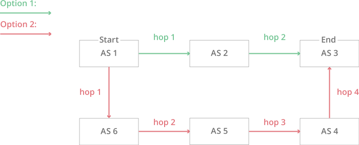

计算机网络
计算机网络
第一章 概述
概念
A computer network is a collect of autonomous computers interconnected by a single technology.
计算机网络是自主（自治）的计算机通过通信技术（通信线路与通信设备）互联起来的集合体
三网：
- 电信网络：向用户提供电话、电报及传真等服务；
- 有线电视网络：向用户传送电视节目；
- 计算机网络：使用户能够在计算机之间传递数据。
应用
例如，一个对等网络：
分类
关于计算机网络，没有一种被普遍接受的分类方法，但是有两个维度非常重要：传输技术和网络尺度。
按照传输技术
从广义上讲，目前普遍使用的传输技术有两种，分别是广播式链路和点到点链路。
点到点（point-to-point）链路将一对单独的机器连接起来。在一个由点到点链路组成的网络中，为了从源端到达接收方，短消息必须首先访问一个或多个中间机器，这种短消息在某些情况下称为数据包或包（packet）。通常在网络中有可能存在多条不同长度的路由，因此，找到一条好的路由对点-点网络非常重要。点-点传输只有一个发送方和一个接收方，有时候也称为单播（unicasting）。
在一个广播网络上，通信信道被网络上的所有机器所共享；任何一台机器发出的数据包能被所有其他任何机器收到。每个数据包的地址字段指定了预期的接收方。当一台机器收到一个数据包时，它要检查地址字段。如果包的目的地就是接收机器，则该机器要处理此数据包；如果包的目的地址是某台其他机器，则该机器就忽略此数据包。
广播系统往往还提供将一个数据包发送给所有目标机器的可能性，只要在地址字段中使用一个特殊的编码。如果被传输的数据包带有这样的地址编码，那么网络中的每一台机器都将会接收该包并对其进行处理。这种传输模式称为广播（boradcasting）。有些广播系统还支持给一组机器发送数据包的模式，这种传输模式称为组播（multicasting）。
按照网络尺度
个域网（PAN，Personal Area Network）允许设备围绕着一个人进行通信。一个常见的例子是计算机通过无线网络与其外围设备连接。
局域网（LAN，Local Area Network）是一种私有网络，一般在一座建筑物内或建筑物附近，比如家庭、办公室或工厂。局域网络被广泛用来连接个人计算机和消费类电子设备，使它们能够共享资源（比如打印机）和交换信息。当局域网被用于公司时，它们就称为企业网络（enterprise nework）。
- 许多有线局域网的拓扑结构是以点到点链路为基础的。俗称以太网（Ethernet）的IEEE 802.3 是迄今为止最常见的一种有线局域网。每台计算机按照以太网协议规定的方式运行，通过一条点到点链路连接到一个盒子，这个盒子称为交换机（switch）。一个交换机有多个端口（port），每个端口连接一台计算机。交换机的工作是中继与之连接的计算机之间的数据包，根据每个数据包中的地址来确定这个数据包要发送给哪台计算机。
- 当然还有其他形式的有线局域网拓扑结构。
城域网（MAN，Metropolitan Area Network）的范围可覆盖一个城市。最有名的城域网例子是许多城市都有的有线电视网。
广域网（WAN，Wide Area Network）的范围很大，它能跨越很大的地理区域，通常是一个国家、地区或者一个大陆。
- 我们将专门运行用户（即应用）程序的计算机称为主机（host），然后把连接这些主机的网络其余部分称为通信子网（communication subnet），或简称为子网（subnet）。子网的工作是把信息从一个主机携带到另一个主机，就像电话系统把说话者的话（实际上是声音）传递给接听者一样。
- 在大多数广域网中，子网由两个不同组成部分：传输线路和交换元素。传输线路（transmission line）负责在机器之间移动比特。它们可以是铜线、光纤，或甚至无线链路。交换元素（switching element）或简称为交换机（switch）是专用的计算机，负责连接两条或两条以上的传输线路。当数据到达一条入境线路时，交换元素必须选择一条出境线路把数据转发出去。这些负责交换的计算机在过去有各种不同的名称，现在最常用的名称是路由器（router）。
- 如果两个想通信的路由器没有共享同一条传输线路，那么它们必须通过其他路由器间接地进行通信。网络中可能存在许多条路径都可以连接这两个路由器。网络如何决定使用哪条路径的策略称为路由算法（routing algorithm），这样的算法有许多。每个路由器如何决定把一个数据包发送到哪个位置的策略称为转发算法（forwarding algorithm），这样的算法也有许多。我们将在第5 章中详细研究这两类算法。
网络软件
协议层次结构
协议：为进行网络中通信双方的数据交换而建立的规则、标准或约定。（How to do）
接口：接口定义了下层向上层提供哪些原语操作和服务。
服务：各层向它上层提供的一组原语（操作）。（What to do）
感觉接口和服务的概念多少有些重复
网络体系结构：层和协议的结合
协议栈：一个特定的系统使用的一组协议（一层一个协议）
- 分层的好处：
- 各层保持独立：下层只向上层提供稳定的接口即可；
- 高灵活性：任一层可以独立变化和设计，只要保证层间接口关系不变即可；
- 结构上可分割：各层可采用最合适的技术实现；
- 易于实现和维护：整个系统被分解为几个相对独立的“子系统”；
- 可促进标准化工作：每一层所提供的服务都可以被精确描述。
比如考虑这样的例子：
水平方向的协议属于逻辑链路，竖直方向接口和服务属于物理链路。
同时，在许多网络中，对于第4层上传递的消息大小没有任何限制，但是几乎所有第3层协
议对此总会强加一个限制。因此，第3层必须把入境消息分割成较小的单元，即数据包或
包（packet），并且在每个数据包前面加上第3层的头。在这个例子中，M 被分割成两部分：
M1 和M2，这两部分内容是被单独传输的。

层次设计的问题（需要考虑的问题）
- Addressing(寻址方式)：标识特定的收发者
- 数据传输的规则
- 单工通信（simplex）：单向发送。
- 半双工通信（half-duplex）：双向，但不能同时发送。
- 全双工通信（full-duplex）：双向，且可同时发送。
- Error Control(差错控制)：检错，纠错，策略
- Flow Control(流量控制)
- 在每一层都会发生的一个分配问题是，如何保持快速发送方不会用数据把慢速接收方淹没。这个问题的解决经常使用了从接收方到发送方的反馈机制。这个主题就是流量控制（flow control）。有的时候还会出现网络超载问题，因为太多的计算机要发送太多的流量，而网络又没有能力传递所有的数据包。这样的网络超载称为拥塞（congestion）。一种策略是当发生拥塞时，每台计算机都减少其对网络的带宽需求。这种策略可用于所有层次。
- Disassembling(报文的分割) and Reassembling(组合)
- Sequencing (保序)
- Multiplexing(多路复用)
- Routing (路由选择)
- QoS（Quality of Service）, security
信道复用技术：
- 频分复用（FDM）：所有用户在同样的时间占用不同的带宽（频率带宽）资源；
- 时分复用（TDM/STDM）：所有用户在不同的时间（周期性出现）占用同样的频带宽度（更利于数字信号的传输）；
- 码分复用（CDM）：用户使用经过特殊挑选的不同码型，因此不会造成干扰。有很强的抗干扰能力。
- 波分复用（WDM/DWDM）：“光”的频分复用。
面向连接与面向无连接
每个服务都可以用一个服务质量（quality of service）来表述其特征。有些服务是可靠的，意味着它们从来不丢失数据。一般情况下，一个可靠服务是这样实现的：接收方向发送方确认收到的每个报文，因而发送方可以据此保证报文已经到达接收方。确认过程本身要引入额外的开销和延迟，通常这是值得的，但有时也不一定需要。
面向连接
经典案例TCP
面向连接服务的数据传输过程必须经过连接建立、连接维护与释放连接的三个过程；
面向连接服务的在数据传输过程中，各分组可以不携带目的结点的地址；
- 因为连接已经建立好了
面向连接服务的传输连接类似一个通信管道, 发送者在一端放入数据，接收者从另一端取出数据；
面向连接数据传输的收发数据顺序不变，传输可靠性好，但是协议复杂，通信效率不高。
面向无连接
无连接服务的每个分组都携带完整的目的结点地址，各分组在系统中是独立传送的；
无连接服务中的数据传输过程不需要经过连接建立、连接维护与释放连接的三个过程；
数据分组传输过程中，目的结点接收的数据分组可能出现乱序、重复与丢失的现象；
- 如果是需要确认的无连接，因为可能存在重传所以可能重复
无连接服务的可靠性不好，但是协议相对简单，通信效率较高。
通信协议四种类型
面向连接与确认服务；
面向连接与不确认服务；
无连接与确认服务；
无连接与不确认服务；
第二章 物理层
物理层设计的关键问题怎样使用（模拟）信号发送（数字）比特数据（bits）。使用模拟信号发送数字信号的过程叫做调制（modulation）
模拟信号是指用连续变化的物理表示的信息，其信号的幅度、频率、相位随时间连续变化。在变化范围内可以有任意的取值。
数字信号由模拟信号经过离散化获得，时间离散，幅值离散，频率、相位离散。
理论基础
傅里叶变换，建议参考课本
是信号的基频 ，T 是信号周期；f是基频，基频的整数倍被称作n次谐波
信道：用于传输信号的一个物理通道。可以是一个传输导线，也可以是一个频率范围，或几个传输导线的传输能力的复合。
信号在任何物理通道传输的过程中会有能量的损失，尤其是不同频率的信号损失程度不同。频率越高的信号损失能量越多。给定一个传输介质，频率高的一些信号成分无法传输到接收方。（消耗完了）
（介质）带宽（bandwidth）：传输过程中能量（振幅）不会明显衰减的频率的宽度。通常带宽是指的0到接收能量保留一半的频率位置。
滤波技术（filtering）使得多个信号共享一段给定范围的频谱（某些信号的起始频率不等于0）；电视一个频道占6MHz
基带（baseband）信号：占用从0到某个最大频率的信号（信号范围 ）
N.B. 电气工程：（模拟）带宽是可以通过信号的最大频率，以 Hz 度量；计算机：（数字）带宽是一个信道传输最大速度数据速率（data rate），用 bps（bits/s）来计量。
波特率（Baud per second, Bps)：信道上每秒钟信号变化的次数；或信道上每秒钟传递的周期信号个数。
- 波特率的最大取值不大于信道带宽。因为波特率的取值等于所传周期信号一次谐波的频率值。
比特率（bit per second, bps）：信道上每秒钟发送或接收的比特位数（bit），更精确地说，单位时间内传输的码元个数，比如二进制码元就是2，如果用16进制传输，码元就是16。
- ，其中，W表示一个周期信号能够表达的信息位数。如下例， ，
采样定理
奈奎斯特定理（理想状态）
给定一个带宽为B的信道，则这个信道的最大数据传输速率为：
其中， 表示信道上的最大采样频率，这是因为对每一个正弦（余弦）函数，如果其频率为 ，则需要个（确切）采样点就可以完全恢复（奈奎斯特采样定理）。
表示采样信号被量化时使用的离散等级（可能的取值数量）。比如二进制数据传输，
是表达采样值时采用的二进制位数。
这个公式给出了物理介质带宽（Hz）与数字带宽（bps）之间的关系。V 取决于发送和接收设备。
如果使用波特，上述公式还是这样吗？
是。一个波形对应两个采样点，则一个波形表达的位数为
香农定理（现实状态）
对于一个带宽为B Hz、信噪比为S/N的信道，则这个信道的最大数据传输速率为：
实际中信噪比一般用多少db表示，即 ，比如语音通话信噪比典型值为30db，对应的
传输介质
没啥好说的。
光纤的优缺点
1、频带宽，速度快
尽管光纤对不同频率的光有不同的损耗，但在最低损耗区的频带宽度也可达30000GHz。采用先进的相干光通信可实现在30000GHz范围内安排2000个光载波，进行波分复用，可以容纳上百万个频道。同时，光纤传输速度快，可提供10Mbps、100Mbps、1000Mbps的高速带宽，实现双向数据同步传输。
2、重量轻、体积小
因为光纤非常细，加上光纤是玻璃纤维，比重小，使它具有直径小、重量轻的特点。一公里的裸光纤质量仅为27克。光纤的这一特点使得其敷设方式方便灵活，既可以直埋、管道敷设，又可以水底和架空。
3、通信容量（带宽）大
从理论上讲，一根头发丝粗细的光纤可以同时传输1000 亿个话路。虽然目前还未达到如此高的传输容量，但用一根光纤同时传输24 万个话路的试验已经取得成功，它比传统的明线、同轴电缆、微波等要高出几十乃至上千倍以上。
4、损耗低，传输距离长
一般而言，光纤接入每公里衰减比目前容量最大的通信同轴电缆的每公里衰减要低一个数量级以上，如果配以适当的光发送与光接收设备，光纤的中继距离达数百公里以上。而普通铜线（数据线）的传输距离只有几百米。因此光纤通信特别适用于长途一、二级干线通信。
5、保密性、抗干扰能力强
光纤只传光，不导电，不受电磁场的作用，因此光纤对电磁干扰、工业干扰有很强的抵御能力，使得光纤中传输的信号不易被窃听，因而保密性强。
6、原材料来源丰富，潜在价格低廉
制造石英光纤的最基本原材料是二氧化硅(SiO2)，即石英，石英在大自然界中取之不尽、用之不竭的。因此光纤的潜在价格是十分低廉的。
7、工作性能可靠
光纤传输损耗有两个特点，一是在全部有线电视频道内具有相同的损耗，不需要像电缆干线那样必须引人均衡器进行均衡；二是其损耗几乎不随温度而变，不用担心因环境温度变化而造成干线电平的波动。因此光纤传输使用安全稳定，可用于易燃易爆等危险场所。
8、耐化学腐蚀性强，使用寿命长
光纤本身的材料是石英(SiO2),外包装材料一般为特种工程塑料，都具有极高的耐腐蚀性，因而对环境的适应性非常强，具有耐酸、耐碱的特性。
缺点：
1、质地脆，机械强度差。
2、光纤光缆的弯曲半径不能过小（>20cm）
3、切断和连接光纤时，需要高精度的切断接续技术，这在电缆连接时是没有的。
4、光纤不能输送中继器所需要的电能，所以有一定的供电问题。
5、半双工或者全双工，而铜网线是全双工
公共电话交换网
一些概念
数字调制：为了发送数字信息，必须用模拟信号来表示比特。比特与代表他们的信号的转换过程叫做数字调制。调制是将数据转换为模拟信号，解调是将模拟信号转换为数据。
多路复用：用单根线缆传送几个信号的信道共享形式叫做多路复用技术。
信号(Signal)：数据的物理量编码（通常为电编码），数据以信号的形式传播。
- 模拟信号与数字信号
- 基带 ( Base band ) 信号 ：信源发出的没有经过调制（频谱搬移和变换）的原始电信号
- 宽带 ( Broadband ) 信号：将基带信号进行调制（频谱搬移和变换）后形成的模拟信号
本地回路

Modem：数字信号 -> 模拟信号，Codec：模拟信号 -> 数字信号
几种调制方法
- 调幅（AM）：载波的振幅随基带数字信号而变化；
- 调频（FM）：载波的频率随基带数字信号而变化；
- 调相（PM）：载波的初始相位随基带数字信号而变化。

数字用户线（Digital Subscriber Line）
ADSL（Asymmetric DSL）非对称数字用户线；一般80-90%带宽用于下行（用户下载数据量远大于上传）
ADSL：8M/1M；ADSL2：12M/1M；ADSL2+：24M（距离端局较劲的良好线路上的最快速度，实际无法达到）
中继线和多路复用
中继线是电话系统中的骨干线路，用于连接不同层次的交换局，使用数字信号传输。现在的中继线一般为光纤，能够同时支持多路电话呼叫，采用的主要技术是多路复用技术。
频分复用
将频谱分为几个频段，每个用户用其中一个频段发送信号。多路复用中每个信道所分配的带宽大于通信实际需要的带宽，多出的频带叫做保护带（guard band），使信道之间完全隔离。不过即使有保护带，因为滤波器是非理想的，相邻信道间仍然可能存在重叠。适用于模拟信号传输 。
波分复用
原理：整个波长频带被划分为若干个波长范围，每个用户占用一个波长范围来进行传输。
时分复用
原理：把时间分割成小的时间片，每个时间片分为若干个通道（时隙） ，每个用户按照固定的安排，轮流占用一个通道传输数据。
时分复用要求输入流时间上必须同步，为了适应时钟的微小变化，增加保护时间（guard time）间隔。
TDM的缺点：某用户无数据发送，其他用户也不能占用该通道，将会造成带宽浪费。
改进：统计时分多路复用（STDM），用户不固定占用某个通道，有空槽就将数据放入。
码分复用
没讲
交换
交换局内主要设备是交换机（交换节点），交换机连接多条线路，主要功能是把一条入境线路上来的呼叫交换到一条出境线路上。从而支持呼叫一直到接收方。本小节主要介绍两种交换技术—电路交换和数据包交换（分组交换）的概念和基本工作原理。
电路交换
电路交换是一种面向连接的工作方式。分为三部：使用前建立一条从发送方到接收方的路径；使用这条路径传输；传输完毕释放路径。
优缺点：
- 建立连接的时间长；
- 一旦建立连接就独占线路，线路利用率低；
- 无纠错机制；
- 建立连接后，传输延迟小。
分组交换
包（分组）交换是一种非连接的工作方式。数据被分为多个包（分组），每个包包含完整的目的地址。每个包经过交换节点时，交换节点按照当前网络状况（交换表）为其选择一条输出线路。此过程一直持续直到包被传送到目的地
优点：
存储量要求较小，可以用内存来缓冲分组——速度快；
转发延时小——适用于交互式通信；
某个分组出错仅重发该分组——效率高；
各分组可通过不同路径传输，可靠性高。
第三章 数据链路层
数据链路层负责两台网络中相邻的机器的承载信息的帧的传输。主要解决传输中错误的检测和纠正以及数据流的控制问题。
两个重要概念：
可靠性
- 可靠性主要包括两个方面的内容：差错控制和流量控制。
- 差错控制是为了克服线路误差带来的传输错误。
- 流量控制是为了避免快速的发送方淹没慢速的接收方。所谓淹没，则是发送方发送的太快，使得接收方来不及接收所有的数据，造成数据的丢失。
- 可靠性主要包括两个方面的内容：差错控制和流量控制。
高效性
- 高效性主要指能够充分利用线路的带宽。主要是克服线路延迟给可靠传送数据带来的限制。
数据链路层设计问题
提供给网络层的服务
数据链路层的功能是为网络层提供服务，最主要任务是把数据从源机器的网络层传输到目标机器的网络层
Unacknowledged connectionless service：无确认、无连接
Acknowledged connectionless service：有确认无连接
Acknowledged connection-oriented service：有确认有连接
成帧（framing）
帧：数据链路层对等体之间交换的协议数据单元
发送方实体将从网络层接收到的分组添加额外的字段（协议字段）封装而成。接收方实体根据协议字段的取值执行相应的操作（协议算法）。判定接收的数据正确后，最终将协议字段去掉，将分组提交给自己所在设备的网络层。
帧的长度是有限制的。每个传输线路都有一定的差错率，帧的最大长度限制是为了让一个帧在传输过程中出现差错这个现象成为“小概率事件”，从而易于处理出错的帧。在网络中经常使用重传处理差错。
每个帧包括一个帧头（Header），一个有效载荷（用于存放数据）以及一个帧尾。
成帧的主要工作是将每一段来自上层的数据封装起来，使得数据链路层的接收方实体能够正确识别一个帧的开始和结束（能够确定帧的边界），并能依据帧中携带的各种控制字段（额外添加的协议字段）判断所接收帧的正确性（是否在传输过程中出错、是否是想要的那一帧）。
本节主要考虑帧边界的定义方法，编号、确认号、校验和等在后续节中讲解。这些控制字段在完成协议功能的前提下要尽可能少，属于额外开销。
确定帧的边界有一些基本的要求：容易识别一个帧的开始和结束（出错时容易同步）；开销（额外带宽）尽可能少。
成帧的四种方法：
字节计数法
- 头部的一个字段标识该帧的字符数
字节填充的标志字节法
- 考虑了出错之后的重新同步问题
比特填充的标志比特法
- 解决字节填充必须使用8比特字节的问题
物理层编码违禁法
- 用不表示数据的符号（例如4B/5B）来标志帧的开始
字节计数法
帧的头部中的一个字段（比如第一个字节）来表示该帧中一共有多少个字符
这种方法比较简单，知道字符数就知道该帧在何时结束，但是计数值出错之后，接收方就找不到下一帧正确的起始位置，很难重新同步
错误之后无法要求重传（接收方不知道从哪里开始错误）
这种方法很少被使用
字节填充的标志字节法
每个帧用一些特殊的字节作为开始和结束，称为标志字节
标志字节的开支更大，但发生错误之后容易重新同步
二进制数据中可能会出现 标志字节（实际上是数据）干扰帧的分界
使用字节填充的方式解决数据中的标志字节问题
在特殊字符前插入转义字节（ESC），叫做字节填充
特殊字符前有转义字节就是数据，没有转义字节就是标志字节
发送方在发送数据时给作为数据的所有特殊字符加ESC，给标志字节不加ESC，接收后通过有无ESC来区分下一个特殊字符是数据还是标志字节。
比特填充的标志比特法
帧的划分可以在比特级完成，每个帧开始和结束有一个特殊的比特模式
- 比特模式：01111110 代表帧的开始和结束
- 注意这里面有6个1，同时两端使用0与其余部分相隔。（尤其是前面的0，避免比特模式的1与数据的1连在一起）
为避免数据中出现相同的比特模式错误的判断帧的划分，使用比特填充
比特填充：发送方在数据段里每5个连续的1后面添加一个0，类似于数据字段标志字节前插入转义字节
- 这样数据部分一定不会有连续的6个1
在接收端，数据字段出现5个连续的1，并且紧跟一个0，自动删除比特0
- 一旦出现连续的6个1就一定是比特模式。
比特填充和字节填充问题：
- 最终长度取决于数据内容：例如数据中有无标志字节（字节填充），有无连续5个1（比特填充）
物理层编码违禁法
物理层编码中有一些编码形式（Code）不会出现在常规数据中（编码违禁），可以使用编码违禁来区分帧的边界
例如：4B/5B编码中有25-24=16个编码在数据编码中不会被使用，这些分界符是保留不用的，可以用来区分帧的边界，不需要填充
又如曼彻斯特编码，电平高变低代表bit为1，低变高为0，可以用低低或者高高电平表示边界。
差错控制与纠正
相关概念和工作机制
检验和/校验和（checksum）
最简单的检验和是奇偶检验。也就是在数据之外增加一位，这一位的目的就是将原有数据加上增加的这一位具有某种明显的特征。如“数据+校验位”中“1”的个数是奇数个（偶数个）。发送方发送帧时，根据原来数据中1的个数决定校验位的取值。
以1位偶校验为例。“数据+校验和”中“1”的个数为偶数个。这就是约定的特征。接收方收到帧后，检查“数据+校验和”中“1”的个数是否为偶数个。是，则认为帧传递正确。不是，则认为传输过程出现了错误，需要重传。
校验和的开销体现在额外增加的位的多少、位的位置和校验位生成和检查的算法的复杂性。校验位的多少影响线路使用的效率，校验算法的复杂性影响数据发送和接收的处理速率。总的来说，会影响真正数据传输的速率（或传输线路的利用率）。
校验和的复杂性需要平衡校验通过则数据传输正确的支持和开销两个方面的因素。如果让“校验通过则数据传输正确”这个结论100%正确，需要的开销可能很大。一般支持这个结论到一个可以接收的置信度就可。
重传
当某一帧在传输过程中出现错误时，网络中常用的处理方法是发送方重传这一帧，而不是接收方使用纠错算法纠正错误。
重传对发送方有资源要求，即保存自己所发送过的帧，需要时重新发送一次。只有当一帧被接收方正确接收并将帧中分组提交给网络层后，才认为这一帧的传递任务结束，才能清空保存这一帧的缓冲区。
一个分布式协议观点：通信双方组成一个分布式系统，只有当双方都认为一帧传递正确后，协议才认为这一帧的传递结束。校验和只是让接收方判断是否接收正确。
确认
接收方对自己所接收正确的帧回复一个确认，使得接收方也能知道这一帧已经被正确传输。
有了确认机制后，发送方如果收到一帧的确认，则认为这一帧已经被正确传递，并且接收方也这样认为（否则不会发回确认），这一帧的传递结束。清空这一帧所使用的资源。
如果发送方没有收到一帧的确认，则需要重传这一帧。
重传定时器
为了避免发送方长时间地等待确认，根据线路延迟等要素估计一个确认能够返回的时间，设置为重传定时器。当等待时间超过这个时间时，则认为确认无法回来，重发这一帧。
在定时器超时时一帧的确认没有回来，发送方只能认为接收方没有发回确认，因为接收方没有收到正确的这一帧。所以选择重传这一帧。
但是，情况并不完全是这样。确认没有回来有可能是确认在传输过程中出错丢失了。重传会造成接收方收到重复的帧。（这是由于分布式系统中每个实体只能使用局部的部分的信息做出判断和操作）。
编号
为每个传递的帧确定一个编号，从而区别不同的帧。当接收方收到一个已经接收过的编号的帧时，则认为是重复帧，直接丢弃这一帧，但要回复一个这一帧的确认（因为接收方在等待这一帧的确认）。
海明码
一个长为n的帧，包含m个数据位，r个校验位，
海明码只能检测出2位错，纠1位错(因此不要问如果3位错怎么办等幼稚问题)。
海明码默认进行偶校验(除非特殊说明使用奇校验)。
海明码需要的校验位r的计算，例：如果
校验位在
比如要校验如下序列：1100
首先算出校验位数， 。
那么我们需要三位校验，分别插入1,2,4位置，即：，其中下划线的位置即为校验位的位置。
最后写出下标二进制与对应值如下：
| 001 | 010 | 011 | 100 | 101 | 110 | 111 |
|---|---|---|---|---|---|---|
| 校验位 | 校验位 | 1 | 校验位 | 1 | 0 | 0 |
每个校验位的值就是该校验位为1构造成的位的通配符所匹配的下标的对应值的偶校验（挺绕的）
比如校验位 ，通配 （准确来说是，因为？是匹配一位，不过理解就好），也就是说，该校验位对应的是二进制下标中第三位为1的所有下标对应的值的偶校验，即这四位的值的偶校验，偶数个1（校验位未知，置0），所以校验为0。
以此类推可以算出最终为 0111100。
我们接收到上面海明码后，假设接受到的是0101100，也就是说下标011位置的值是错误的。
假设错误累加器（err）的初始值为0。
我们求出校验位的偶校验和，按照码位累加到err中：
001：
010：
100：
最后得到错误累加器的值为3，也就是第三位错了，由0改为1即可。0111100
最后删除 位的校验码得到1100。
循环冗余码
把要传输的数据信息当作一个报文码多项式 的系数，发送时用一个标准的生成多项式 来除 ，将所除得余式 的系数附加在报文码之后发出；接收时用同一生成多项式 来除收到的码字多项式，能除尽说明传输正确，否则说明有错。
码多项式
对于长度为 的任一二进制码字，可以用一个 的 次多项式来表示。码字中每个码元的值就是该多项式中的相应的系数。此多项式就成为码多项式。
如： 的码多项式为：
又如：码字1010111对应的多项式为 ，而多项式为 对应的码字为101111。
算法
接收方使用相同的生成式进行校验，将接收到的字段除以生成式（依然是二进制除法的形式），如果能够除尽，则正确，否则出错。
基本的数据链路层协议
数据链路层环境
网络层、数据链路层和物理层都是独立的进程。
物理层的功能实现驻留在网络接口卡（Network Interface Card，NIC）中，主要功能包括按照一定速率将数据转换为信号发送出去和将接收到的信号转换为数据。
数据链路层的功能实现部分分布在网卡中，部分分布在操作系统中。网卡中的数据链路层功能主要包括对发送的数据生成校验和，对接收的数据检查校验和。网卡上发送和接收的数据都存放在一个缓冲区中，由网卡上的物理层和数据链路层进程使用。
以上主要由硬件实现
数据链路层的部分功能（本章关心的协议内容）在操作系统中实现，主要包括可靠性和高效性所涉及的各种功能。如重传、确认、编号、流量控制、流水等。网络层的功能也在操作系统中实现。操作系统中发送和接收的数据都存放在操作系统管理的缓冲区中，由位于操作系统中的数据链路层和网络层进程使用。
应用层有单独的缓冲区。数据需要在应用层缓冲区和操作系统缓冲区交换数据
以上主要由软件实现。
无约束单工协议
工作在理想情况，几个前提：
单工传输
- 发送方无休止工作（要发送的信息无限多）
- 接收方无休止工作（缓冲区无限大）
- 通信线路（信道）不损坏或丢失信息帧
工作过程
- 发送程序：取数据，构成帧，发送帧；
- 接收程序：等待，接收帧，送数据给高层
无错信道等停
单工，增加了流量控制
发送端确认帧为帧s。
有错信道
有错信道上的单工停-等式协议
增加约束条件：信道（线路）有差错，信息帧可能损坏或丢失。
解决办法：出错重传。
带来的问题：
- 什么时候重传 —— 定时器
- 响应帧损坏怎么办（重复帧）—— 发送帧头中放入序号
- 为了使帧头精简，序号取多少位 —— 1位
发方在发下一个帧之前等待一个肯定确认的协议叫做PAR（Positive Acknowledgement with Retransmission）或ARQ（Automatic Repeat reQuest）
为了保证正确性，帧和确认必须有编号，这是因为可能确认帧丢失等原因导致的接收到多个同样帧，而数据链路层应该只将帧交给网络层一次（也就是过滤掉多余帧）。
四种可能的错误如下
接收端逻辑分析：如果监听到帧的接收，从物理层获取到该帧的信息为帧r，检查r的序列号seq是否为我们想要的帧，如果是，发送给网络层，并且调整frame expanded变量。将确认帧s的ack设置为原先的frame expanded变量（就是inc()函数执行之前的值），通过网络层发回。
此处会有frame expanded变量，这是因为seq只有1位，因为此协议每次只会处理一个帧，每处理一帧后frame expanded变量都会改变一次（在0与1中），所以如果是重传，下一帧seq依然是原来的值，会被直接舍弃。
比如frame expanded变量初始时为0，对应帧来到后，完成处理，frame expanded变量变为1，如果发生重传，seq仍为0，不相等，直接舍弃。且没有调用inc()，所以frame expanded变量一直为1，如果依然发生重传，则会一直舍弃。
发送端逻辑：从网络层取到数据帧后给buffer赋值，然后进行循环，封装帧s并通过网络层进行发送，同时启动计时器，等待确认帧的返回，监听到帧到达后，从网络层取出数据帧，如果是应答帧ack，停止计时器，准备下一帧的发送。此处next_frame_to_send变量就类似于frame expanded变量。
PS.因为存在确认帧的回传，所以这个协议看起来像双工的，但是数据帧是单向传输的，所以是单工的。确认帧并不算在确认帧内。
滑动窗口协议
全双工。
捎带/载答（piggybacking）：暂时延迟待发确认，以便附加在下一个待发数据帧。
也就是说将下一个数据帧的ack设置为上一帧的ack，有效利用ack的位置。
优点：充分利用信道带宽，减少帧的数目意味着减少“帧到达”中断；
带来的问题：复杂。
工作原理
发送的信息帧都有一个序号，从0到某个最大值，如 ，一般用n个二进制位表示；
发送端始终保持一个已发送但尚未确认的帧的序号表，称为发送窗口。发送窗口的上界表示要发送的下一个帧的序号，下界表示未得到确认的帧的最小编号。发送窗口大小 = 上界 - 下界，大小可变；
发送端每发送一个帧，发送的帧的序号上界加1；每接收到一个正确响应帧，下界加1。
接收端有一个接收窗口，大小固定，但不一定与发送窗口相同。接收窗口的上界表示能够接收的序号最小的帧。
接收窗口容纳允许接收的信息帧，落在窗口外的帧均被丢弃。帧被正确接收就产生一个响应（确认）帧，上界、下界都加1。接收窗口大小不变。
一个基本要求：数据链路层协议必须按照发送的顺序递交所有的帧给网络层。
一位滑动窗口协议
协议代码逻辑类似于上面代码逻辑的拼合。
一位滑动窗口协议的两种情况
Notation is (seq, ack, frame number).
左侧过程：
A发送（0,1，A0），0是seq的初始值，1是对前一帧的ack（或者初始值），A0为数据，B接收到后发送（0,0，B0），0是B的seq的初始值，第二个0表示对A0的seq=0的ack，B0是数据，如此往复。
右侧过程：
A和B都试图发送，A先发送（0,1，A0），B发送（0,1，B0）二者seq以及ack都应该是初始值，B接收到后发现A的ack=1，与自己发的（0,1，B0）的seq不一样，重传（0,0，B0），表示收到了seq=0的A0，同样A也会重传（0,0，A0）表示收到了seq=0的B0，也就是说，最终的结果相当于消息体A0、B0与ack消息被分开传输了。
重传方法（Go-Back-N）
接收端必须按照顺序接收（窗口是1）
发现错误或者丢失帧，将所有后续帧都丢弃
发送端对应的帧超时，重传所有超时帧（发生错误及其之后的帧）
接收窗口长度是1

接收策略简单。但是会浪费链路带宽
选择性重传协议
更复杂，但是更好的利用了带宽。
第四章 介质访问控制子层
介质访问控制（MAC）：当多个使用者共享同一个信道时，确定下一个使用者的问题。
介质访问控制问题基本假设
流量独立：N个独立的站（计算机、电话）组成，每个站独立产生流量；帧的到达是独立的
单信道假设：所有站共享同一信道，可发送可接收
冲突可观察假设：如果两帧“同时传输”（传输时间有重叠），会产生信号重叠造成信号混乱、不可识别，称为“冲突”。冲突使所有传输失败，除了冲突产生错误，不会再有其他错误。所有站都可以检测到冲突的发生。而且发生冲突需要重新传输。
时间连续或分槽（离散）：如果时间连续，则在任何时刻可以开始传输数据；如果时间离散，则只能在某个时间槽的起始点开始传输。
载波侦听或不侦听：侦听判断当前信道是否空闲，一个站在试图使用信道之前知道该信道是否被使用。
多路访问协议
ALOHA
pure ALOHA
先说后听
只要有待发数据，就发送
多个站直接在信道上发送数据，很容易冲突
分槽 ALOHA
将时间分成离散的间隔（时间槽），每个时间槽对应一帧。
用户要遵守统一的时间槽边界。
系统中有一个特殊的站在每个间隔起始时刻发出一个脉冲信号。
用户需要等待下一个时间槽开始时刻发送数据。
易受冲突期减少了一半。
CSMA（载波侦听多路访问协议）
先听后说
检测其他站点，调整自己的动作
1-Persistence CSMA
当一个站有数据要发送时先侦听信道
若信道空闲，立即发送数据
若信道忙，持续监听等待直至信道变为空闲
若发生冲突，等待随机时间，返回步骤1
1-persistence代表出现信道空闲，传输数据的概率为1
如果2个以上的站在某个站传输数据过程中准备好了数据，在空闲到来时会产生冲突
若传输延迟大，第一个站的信号没有到达第二个站时，后者认为信道是空闲的，发送数据导致冲突（带宽延迟积越大，越严重）
Non-Persistence CSMA
当一个站有数据要发送时先侦听信道
若信道空闲，立即发送数据
若信道忙，不持续监听，等待一个随机时间返回步骤1
若发生冲突，等待随机时间，返回步骤1
与1-Persisitence CSMA相比，Non-persistence CSMA的信道利用率更好（冲突发生概率低），但延迟更大（更多的随机等待
P-Persistence CSMA
p-Persistence适用于分时间槽的信道
当一个站有数据要发送时先侦听信道
若发现信道空闲，在下一个时间槽到达时，以p的概率发送数据
有q=1-p的概率，将发送推迟到下一个时间槽
在新的时间槽如果还是空闲，依然以p的概率发送数据，q的概率推迟。
以上过程一直重复直到发出，或有其他站发送数据，随即等待一段时间，重复以上步骤
p-Persistence的p越小，信道利用率越高，但带来的延迟也越大
p=1时与1-Persistence CSMA 等价，但是p=0时不与Non-Persistence CSMA 等价
纵坐标或可认为发送成功率
CSMA/CD
边听边说
- 两个站都侦听到信道为空，并且开始传输。信号会产生冲突
- 每个站检测到发生冲突后立即停止传输帧，并发送一个拥塞信号，通过二进制指数后退算法确定等待时间后重新开始监听信道。
- 站的硬件在传输时监听信道，读回的信号不同于发送的信号说明发生了冲突。
- 当一个站传输了 2𝝉 的时间后可以确定不会发生冲突了（ 𝝉 是网络中两个最远站点之间数据传输需要的时间）
- 也就是说所有站点都发现信道被占用
- 考虑到信号传输的延迟，最开始发的时候会有还没接收到信号的站点认为信道空闲
- 2𝝉 的时间是传输与回传的时间
- 所以我们可以让发送的帧足够大，传到以太网最远端时仍在发送。（我们可以计算出最小帧长）
CSMA/CD控制方式的优点是：
原理比较简单，技术上易实现，网络中各工作站处于平等地位 ，不需集中控制，不提供优先级控制。但在网络负载增大时，发送时间增长，发送效率急剧下降。
CSMA/CD跟非坚持的CSMA区别在于听与说的关系，非坚持的CSMA发送时也会有传输延迟的问题，但并不会管是否发生了冲突，若一定时间内没有收到确认，则尝试重发即可。CSMA/CD监听到冲突后会立即停止重发。
碰撞与碰撞检测
电磁波在总线上的传播速率总是有限的，因此，当某个时刻发送站检测到信道空闲时，此时信道并不一定是空闲的。如图所示，设： 𝝉 为单程传播时延。在 时， A 发送数据。在 时， A 发送的数据还未到达 B ，由于 B 检测信道空闲而发送数据。经过时间 后，即在 时， A 发送的数据和 B 发送的数据发生碰撞，但这时 A 和 B 都不知道。在 时， B 检测到碰撞，于是停止发送数据。在 时， A 检测到碰撞，也停止发送数据。显然， CSMA / CD 中的站不可能同时进行发送和接收，因此采用 CSMA / CD 协议的以太网只能进行半双工通信。
最小帧长
由图3.22可知，站 A 在发送帧后至多经过时间 2𝝉 （端到端传播时延的2倍）就能知道所发送的帧有没有发生碰撞（当 时）。因此把以太网端到端往返时间2T称为争用期（又称冲突窗口或碰撞窗口）。每个站在自己发送数据之后的一小段时间内，存在发生碰撞的可能性，只有经过争用期这段时间还未检测到碰撞时，才能确定这次发送不会发生碰撞。
为了确保发送站在发送数据的同时能检测到可能存在的碰撞，需要在发送完帧之前就能收到自发送出去的数据，即帧的传输时延至少要两倍于信号在总线中的传播时延，所以 CSMA / CD 总线网中的所有数据帧都必须要大于一个最小帧长。任何站点收到帧长小于最小帧长的帧时，就把它当作无效帧立即丢弃。最小帧长的计算公式为
例如，以太网规定取51.2为争用期的长度。对于10Mb/ s 的以太网，在争用期内可发送512bit，即64B。在以太网发送数据时，如果前64B未发生冲突，那么后续数据也就不会发生冲突（表示已成功抢占信道）。换句话说，如果发生冲突，那么就一定在前64B。由于一旦检测到冲突就立即停止发送，因此这时发送出去的数据一定小于64B。因此，以太网规定最短帧长为64B，凡长度小于64B的帧都是由于冲突而异常中止的无效帧，收到这种无效帧时应立即丢弃。
如果只发送小于64B的帧，如40B的帧，那么需要在 MAC 子层中于数据字段的后面加入一个整数字节的填充字段，以保证以太网的 MAC 帧的长度不小于64B。
例如：
补充：二进制指数后退算法
冲突次数越多，随机数选取范围越大。这样可以在网络拥塞的时候均衡负载
介质访问控制基本解决思路
介质访问控制问题的基本解决思路可以分为两种：基于冲突的和无冲突的解决方案。还有一种混杂协议结合这两种方案的特点—有限竞争协议。
无冲突的解决方案各站点遵守事先确定的竞争规则，合理安排各个站发送数据的顺序，不会产生冲突。包括以下几个协议：
基本位图法：在一个竞争周期内，如果某个站有数据发送，则当其对应的时槽到来时置1，错过则等待下一个竞争周期。竞争周期结束后，时槽置1的站轮流发送数据。 需要事先安排各个站的编号及对应的竞争时槽。
低负载时效率低，高负载时效率趋近于1。
令牌传递：所有站组成一个逻辑环，令牌按照某种方向在逻辑环上传递。获得令牌的站拥有发送数据的权力。发送完毕后，将令牌向后传递到下一个站。需要事先安排逻辑环上各个站的顺序。
二进制倒计数：每个站拥有一个逻辑地址，发送时各个站按位从高到低广播自己的逻辑地址。信道将所有地址位布尔或在一起。每个站将自己的地址位与布尔或后的位比较，自己地址位小的竞争失败并放弃发送后续的地址位。最终剩余的站竞争成功并随后发送数据。需要事先安排站的逻辑地址。
基于冲突的解决方案没有实现约定的竞争顺序，各个站公平地竞争信道。此时，冲突不可避免。协议基于冲突解决各个站的发送顺序。这是本书的重点，经典以太网采用了这种解决思路。
有限竞争协议综合以上两种协议特点，将所有站分成若干个组，组内公平竞争（基于冲突），组间按照一定顺序竞争（无冲突）。常见的有限竞争协议为自适应树遍历协议。
无线局域网拥有不同于有线局域网的特点，冲突检测困难，信道侦听复杂，采用了类似于经典以太网但冲突避免的协议。
经典以太网
曼彻斯特编码
差分曼彻斯特编码逻辑是在下一位传输为0时发生电压跳变
为了通信的简便以太网采取了两种重要的措施
采用较为灵活的无连接的工作方式，即不必先建立连接就可以直接发送数据。
以太网对发送的数据帧不进行编号，也不要求对方发回确认。
- 这样做的理由是局域网信道的质量很好，因信道质量产生差错的概率是很小的。
以太网的帧格式
无效的MAC地址
数据链路层的两个子层
为了使数据链路层能更好地适应多种局域网标准，802委员会就将局域网的数据链路层拆成两个子层:
逻辑链路控制LLC (Logical Link Control)子层
媒体访问控制MAC (Medium AccessControl)子层。
与接入到传输媒体有关的内容都放在MAC子层，而LLC子层则与传输媒体无关，不管采用何种协议的局域网对LLC子层来说都是透明的。
以后一般不考虑LLC子层
由于TCP/IP体系经常使用的局域网是DIX Ethernet V2而不是802.3标准中的几种局域网，因此现在802委员会制定的逻辑链路控制子层LLC (即802.2标准)的作用已经不大了。
很多厂商生产的网卡上就仅装有MAC协议而没有LLC协议。
传输效率
无线局域网
无线局域网对应的标准为IEEE 802.11，也称为WiFi
无线和有线局域网的区别：无线局域网的站点的信号可能无法覆盖所有的其它站点；而有线局域网任意站点发送的信号都能够到达其它所有站点。
冲突的本质是接收方接收到两路或多路信号时就会发生冲突。CSMA/CD的本质是发送方判断是否发生了冲突。
但是由于无线信号的物理性质，无线局域网中发送方很难侦测到冲突的发生
无线局域网MAC（存在的主要问题）
冲突检测非常困难
- 无线信道是半双工的，节点不能在同一个频率上传输的同时侦听到该频率上的突发噪声
- 接收信号比发送信号的强度低很多，无法在发送同时识别到微弱的信号（接收信号强度过低类似噪声）
无线节点具有不同的覆盖区域，或者说，每个站覆盖的节点有限
- Leads to hidden and exposed terminals（隐藏和暴露终端问题）

关键在于，在接收前如何了解接收方是否有条件接收数据。
MACA冲突避免多路访问
短帧，RTS：Request to send，CTS：Clear to send。
RTS同时会携带预估的数据发送所需时间，CTS会返回这一时间作为确认，其他AP（Access Point）接收到时会暂停发送相应时间。
MACA存在的问题：依然会有冲突
如果两个站点同时发送给一个站点RTS帧，会发生冲突，两个发送站点都接收不到CTS帧。这时需要分解冲突。
无线局域网采用了随机后退策略，类似于p-坚持的CSMA协议+二进制指数后退协议。P-坚持用于事先尽量避免冲突，二进制指数后退用于发生冲突后的随机时间选择。
CSMA/CA（冲突避免）
带有冲突避免的CSMA（CSMA/CA）：在发送前侦听信道（物理侦听+虚拟侦听），如果信道忙则继续侦听，如果信道空闲，则按照随机选择后退的时间槽发送，冲突后指数后退。
通过侦听确定在一个很短的时间内（DIFS）没有信号，则认为信道空闲；
倒计数空闲时间槽（时间槽数事先随机选定），当有帧发送时暂停该计数器；
当计数器为0，发送自己的帧；
如果发送成功，则目标站立即发送一个短确认；
在规定时间内没有收到确认，加倍后退时间槽，再试；
直到发送成功或达到最大发送次数。
CSMA/CA（侦听）
CSMA/CA侦听机制：为了克服隐藏/暴露站点问题，采用物理侦听+虚拟侦听机制。
物理侦听只是简单地检查信道，看是否存在有效信号。
虚拟侦听根据听到的RTS/CTS帧（或其它类型帧）中包含的相关字段（Duration字段 ：用于说明该帧需要的传输时间）设置自己的网络分配向量（NAV，Network Allocation Vector），维护自己的一个关于信道使用的逻辑记录。代表无论能否真正听到信号，在NAV声明的时间信道一定是忙的。
NAV也可以优化为声明自己接收确认的时间段，从而有效地支持并发。
无论物理侦听或虚拟侦听，只要有一个是忙的，则代表信道忙。
NAV 信号是不传输的，它们只是由站内部使用，提醒自己保留一定时间内的安静。
带有物理侦听和虚拟侦昕的CSMA/CA 是802.11 协议的核心。然而，与之相关的几个其他机制也已经被开发出来。每种机制的开发都源自于实际运行的需要。
首先我们需要了解的是可靠性。相对于有线网络，无线网络环境嘈杂，并且不可靠，这是因为相当大一部分要受到来自其他种类设备的干扰。使用确认和重传只能起到很少一点的帮助作用，因为当帧得以成功传输的概率很小时，再确认和重传也帮助不大。
增加传输成功概率所用的策略是降低传输速率。在一个给定的信噪比环境下，速度放慢可以使用更健壮的调制解调技术，帧就越有可能被正确接收。如果有太多的帧被丢失，站可降低速率。如果帧传输时损失很少，则站可以偶尔测试较高速率，看它是否应该采用较高的速率来传输帧。
另一种改善帧成功传输的策略是发送短帧。短帧可以通过降低来自网络层消息的最大尺寸来加以实现。
第二个我们需要讨论的是节省电源。客户没有信息需要发送或接收时不应该浪费能量。节能的基本机制建立在信标帧基础上。信标帧由M 定期广播（例如，每100 毫秒发一个）。该帧向客户通告AP 的存在，同时传递一些系统参数，比如AP 的标识、时间（下一帧多久再来〉和安全设置。
客户端可以在它发送到AP 的帧中设置一个电源管理位（power-management ），告诉AP 自己进入省电模式（ power-save mode ）。在这种模式下，客户端可以打个盹， AP 将缓冲所有发给该客户的流量。
第三个也是最后一个我们需要考查的是服务质量。常规的数据帧之间的间隔称为DCF 帧间隔（DIFS, DCF InterFrame Spacing ）。任何站都可以在介质空闲 DIFS 后尝试抓取信道发送一个新帧。采用通常的竞争规则，如果发生冲突或许还需要二进制指数后退。最短的间隔是短帧间间隔（SIFS, Short InterFrame Spacing）。它允许一次对话的各方具有优先抓住信道的机会。例子包括让接收方发送ACK、诸如RTS 和CTS 的其他控制帧序列， 或者让发送方突发一系列段。发送方只需等待SIFS 即可发送下一段，这样做是为了阻止一次数据交流中间被其他站横插一帧。
冲突协调/检测的两种模式与优先级：
DCF使用物理侦听+虚拟侦听，PCF使用轮询（pollinhg），不会有冲突。
DCF不使用中心控制（没有进行控制的中心节点），PCF使用基站控制cell范围内所有活动。
DCF一定支持，PCF不一定。
SIFS、PIFS、DICF、EIFS优先级依次递减。

802.11帧结构
帧控制：包括11个子字段：协议版本，类型字段（数据帧/控制帧/管理帧），子类型（RTS/CTS）（控制帧才会有），去往/来自DS（发送还是来自AP），更多段，重传，电源管理，更多数据（更多帧），受保护的（加密），顺序（严格按照顺序处理）
持续时间：占用信道的时间（其他站用该字段管理NAV）
地址1，地址2，地址3：接收、发送、远端地址
序号：该帧的编号
数据：有效载荷，最长2312字节
校验序列：32位CRC
数据链路层交换
网桥的使用
网桥（路由器）把多个局域网连接起来组成更大的局域网
- 以太网交换机是网桥的现代称呼
- 网桥工作在数据链路层，通过检查数据链路层地址来转发帧
- 网桥把多个物理局域网连接成一个逻辑局域网
- 虚拟局域网（VLAN）是把一个物理局域网看成多个逻辑局域网
网桥使用的三种情况
- 学校和公司不同部门使用不同的LAN，需要网桥把这些不同的LAN连接起来
- 一个组织分布在不同的楼宇，每个楼内有独立的LAN，通过网桥把分布在不同空间的LAN连接起来
- 把逻辑上的单个LAN分成多个独立的LAN。例如在大学中需要几千台工作站，系统规模很大，不适合把所有的工作站都放在一个LAN上：要上网的计算机数目远大于任何以太网集线器的端口数。
使用网桥的好处
- 使用网桥可以增加局域网的容量
- 使用网桥可以隔离出错的节点（通过转发规则）
- 网桥是全透明的，只需要将LAN线缆插入网桥就可以使用
网桥是数据链路层的设备，我们强调设备工作在哪一层，那么意味着该设备只能理解该层及以下层的信息。
而且每一层有每一层的数据结构
组成与原理
网桥（交换机）的交换功能主要由三个模块组成：转发模块、自学习模块和MAC-端口映射表（也称MAC地址表）。
转发模块依据映射表决定入境的帧应该从哪个端口转出。转发规则为：
目标LAN和源LAN相同，丢弃（相当于同一LAN内的信息交换，无须转发）
目标LAN和源LAN已知，转发
目标LAN未知（网桥新接入），使用泛洪算法（flooding）
- 向所有LAN转发。
使用哈希表列出目的地和他所属的输出端口（例：B给D发送数据）
自学习
自学习模块是一种动态学习机制。映射表是动态建立的，能够动态反应网络拓扑。开始时为空，随着流量的增多，映射表不断完善。
- 为了适应拓扑结构变化，会记录每个地址最新帧的时间
- 映射表中每个表项关联一个计时器，在规定时间内没有刷新的表项删除。
- 一台机器改变物理位置后，旧的对应关系将被遗忘，学习新的关系
- 一台计算机沉默几分钟之后也会被遗忘，需要重新学习
直通式交换
直通式交换（cut-through switching）或虫孔路由（wormhole switching）
不需要像分组交换那样存储转发，而是直接对一部分报文进行交换。
算法实现采用专用的大规模集成电路芯片查找和更新哈希表
看到MAC地址就可以决定如何转发
速度快，可能帧还没传完就开始转发
降低了网桥的延迟和需要缓冲的帧数
自学习形成映射表样例：其中目的站地址是MAC地址。
机制
网桥（交换机）的交换功能主要位于交换机概念模型中的中继（Relay）功能中。三个模块的相互关系为：
转发模块使用MAC-端口映射表（也称MAC地址表）进行转发，使用入境帧中携带的目的地址查找映射表，将帧转发到相应表项对应的端口。
自学习模块执行逆学习算法，建立入境帧的源地址与入境端口的映射关系。
映射表将转发模块和自学习模块的实现解耦合。其它网络设备的工作机制大体如此（表驱动）。
生成树网桥
网桥的拓扑结构存在环形，只使用向后学习可能会造成帧的传输陷入永远的循环
为了提高可靠性，网桥之间有冗余链路，造成了拓扑环路（两个网桥之间有两条甚至更多的路径）
提出基于生成树（Spanning tree）拓扑结构的网桥来解决拓扑环路问题
生成树拓扑结构
生成树要能够到达每个网桥
每个站到另外一个站只有一条路径
无环的生成树拓扑结构是实际拓扑结构的一个子集
生成树的过程
网桥运行一个分布式的算法
每个网桥周期性从所有端口广播一个配置信息给邻居
同时处理其他网桥的配置信息
这些消息不被转发，只用作构建树用于随后帧的转发
生成树算法
每个桥广播自己的桥编号，号最小的桥称为生成树的根；
每个网桥计算自己到根的最短路径，构造出生成树，使得每个LAN和桥到根的路径最短；
如果路径长度相同，选择经过最低标识符的路径；
当某个LAN或网桥发生故障时，要重新计算生成树；
生成树构造完后，算法继续执行以便自动发现拓扑结构变化，更新生成树。
Repeaters, Hubs, Bridges, Switches, Routers, & Gateways
中继器有放大信号功能，集线器没有，单纯转发。
第五章 网络层
- 网络层的地位
- 位于数据链路层和传输层之间，使用数据链路层提供的服务，为传输层提供服务；
- 通信子网的最高层；
- 处理端到端传输的最低层。
- 网络层的作用
- 屏蔽各种不同类型网络之间的差异，实现互连
- 了解通信子网的拓扑结构，选择路由，实现报文的网络传输
- 网络层的两种实现方式 —— 数据报和虚电路
- 都属于分组交换，采用存储转发机制。
- 数据报(datagram)：每个分组被单独路由，分组带有全网唯一的地址。面向无连接。
- 虚电路(virtual circuit)：先在源端和目的端之间建立一条虚电路，所有分组沿虚电路按次序存储转发，最后拆除虚电路。在虚电路中，每个分组无须进行路径选择。
虚电路受网络故障影响大，因为一旦虚电路中出现故障就无法进行信息传递。
网络层通过网络层／传输层接口向传输层提供服务。一个重要的问题是明确网络层向传输层提供什么类型的服务。在设计网络层服务时，一定要牢记下面这些目标
(1）向上提供的服务应该独立于路由器技术。
(2）应该向传输层屏蔽路由器的数量、类型和拓扑关系。
(3）传输层可用的网络地址应该有一个统一编址方案，甚至可以跨越LAN 和WAN 。
实际上NAT违反了uniform numbering统一编码
路由算法
图论，易证，反证，归纳

比较理想。
洪泛算法（Flooding）
属于静态路由算法
基本思想
- 把收到的每一个包，向除了该包到来的线路外的所有输出线路发送。
主要问题
- 洪泛要产生大量重复包。
解决措施
- 每个封装头包含站点计数器，每经过一站计数器减1，为0时则丢弃该包；
- 记录包经过的路径
选择性洪泛算法（selective flooding）
- 洪泛法的一种改进。将进来的每个包仅发送到与正确方向接近的线路上。
应用情况
路由器和线路的资源过于浪费，实际很少直接采用；
具有极好的健壮性，可用于军事应用；
作为衡量标准评价其它路由算法。
距离向量/矢量路由算法（Distance Vector Routing）
动态路由算法
基本思想
每个路由器维护一张表，表中给出了到每个目的地的已知最佳距离和线路，并通过与相邻路由器交换距离信息来更新表；
以子网中其它路由器为表的索引，表项包括两部分：到达目的结点的最佳输出线路，和到达目的结点所需时间或距离；
每隔一段时间，路由器向所有邻居结点发送它到每个目的结点的距离表，同时它也接收每个邻居结点发来的距离表；
邻居结点X发来的表中，X到路由器i的距离为Xi，本路由器到X的距离为m，则路由器经过X到i的距离为Xi + m。根据不同邻居发来的信息，计算Xi + m，并取最小值，更新本路由器的路由表；
无穷计算问题
算法的缺陷：对好消息（节点的加入）反应迅速，对坏消息（节点的断开）反应迟钝；
链路状态路由算法（Link State Routing）
距离向量路由算法的主要问题
选择路由时，没有考虑线路带宽；
路由收敛速度慢。
链路状态路由算法
发现邻居结点，并学习它们的网络地址；
- 路由器启动后，通过发送HELLO包发现邻居结点；
- 两个或多个路由器连在一个LAN时，引入人工结点，或者可以将LAN看做一个结点；
测量到每个邻居结点的延迟或开销；
- 一种直接的方法是：发送一个要对方立即响应的ECHO包，来回时间除以2即为延迟。
将所有学习到的内容（链路状态）封装成一个包；
- 包以发送方的标识符开头，后面是序号、年龄和一个邻居结点列表；
- 列表中对应每个邻居结点，都有发送方到它们的延迟或开销；
- 链路状态包定期创建或发生重大事件时创建。
将这个包发送给所有其它路由器；
- 基本思想：洪泛链路状态包，为控制洪泛，每个包包含一个序号，每次发送新包时加1。路由器记录信息对（源路由器，序号），当一个链路状态包到达时，若是新的，则分发；若是重复的，则丢弃；若序号比路由器记录中的最大序号小，则认为过时而丢弃；
- 改进
- 序号循环使用会混淆，解决办法：使用32位序号；
- 路由器崩溃后，序号重置；
- 序号出错；
- 第二、三问题的解决办法：增加年龄（age）域，每秒钟年龄减1，为零则丢弃。
- 链路状态包到达后，延迟一段时间，并与其它已到达的来自同一路由器的链路状态包比较序号，丢弃重复包，保留新包；
- 链路状态包需要应答/确认（实际上用得不多）
链路状态算法（LS）和距离向量算法（DV）的比较
路由信息的复杂性
LS
- 路由信息向全网发送
- with n nodes, E links, O(nE) msgs sent each
- 路由信息向全网发送
DV
- exchange between neighbors only
收敛（Convergence）速度
LS
- 使用最短路径优先算法，算法复杂度为
- n个结点（不包括源结点），需要 次比较
- 使用更有效的实现方法，算法复杂度可以达到
- 可能存在路由振荡（oscillations）
DV
- convergence time varies
- may be routing loops
- count-to-infinity problem
健壮性: what happens if router malfunctions?
LS
- node can advertise incorrect link cost
- each node computes only its own table
DV
- DV node can advertise incorrect path cost
- each node’s table used by others
- error propagate thru network
分层路由（Hierarchical Routing）
网络规模增长带来的问题
路由器中的路由表增大；
路由器为选择路由而占用的内存、CPU时间和网络带宽增大。
分层路由
分而治之的思想；
根据需要，将路由器分成区域（regions）、聚类（clusters）、区（zones）和组（groups）…
分层路由带来的问题
- 路由表中的路由不一定是最优路由。
广播路由

在有些应用中，主机需要给其他多个或者全部主机发送消息。例如，用于发布天气预报、股市行情最新报告或者现场直播节目等服务，它们最佳的工作方式是将消息广播给所有机器，然后让那些感兴趣的机器读取数据。同时给全部目标地址发送一个数据包称为广播。
一种不要求网络具有任何特殊性质的广播方法是让源机器简单地给每一个目标单独发送一个数据包。这种方法不仅浪费带宽，而且还要求源机器拥有所有目标机器的完整地址列表。实际上这种做法不够理想，即使它广泛适用。一种改进方法称为多目标路由，每个数据包包含一组目标地址，或者一个位图，由该位图指定所期望到达的目标。当一个数据包到达一个路由器时，路由器检查数据包携带的所有目标，确定哪些输出线路是必要的（只要一条输出线路是到达至少一个目标的最佳路径，那么就是必要的）。路由器为每一条需要用到的输出线路生成一份该数据包新的副本，在这份副本中只包含了那些使用这条线路的目标地址。实际上，原来的目标集合被分散到这些输出线路上。在经过了足够多的跳数之后，每个数据包将只包含一个目标地址，因此可被当做普通的数据包来对待。多目标路由方法就如单个地址的数据包一样，只不过当多个数据包必须遵循同样的路径时，其中一个数据包承担了全部的费用，而其他的舒筋梢则是免费搭载。因此，网络带宽的利用率更高。然而，这种模式依然要求源端知道全部的目标地址，对于路由器来说，要确定从哪些线路转发多目标数据包的工作量太大，尤其是处理多个不同的数据包时。
泛洪是更好的广播路由技术。当每个源实现了序号，泛洪能有效利用链路，而且路由器要做的决策也很简单。虽然泛洪方法不适合普通的点到点通信，但它被认为值得考虑做广播，而且，事实证明，一旦计算出普通数据包的最短路径，我们可以把广播做得更好。
逆向路径转发思想被认为是一种非常优秀的广播技术。当一个广播数据包到达一个路由器时，路由器检查它到来的那条线路是否正是通常用来给广播源端发送数据包用的那条线路。如果是，说明这是一个极好的机会，该广播数据包是沿着最佳路径被转发过来的，因而是到达当前路由器的第一份副本。如果是这种情况，则路由器将该数据包转发到除了到来的那条线路之外的其他线路上。然而，如果广播数据包时从其他任何一条并非首选的到达广播源的线路入境的话，该数据包被当做一个可能的重复数据包而被丢弃。
例子如图。图a显示了一个网络，图b显示了该网络中路由器 I 的一棵汇集树，图c显示了逆向路径算法是如何工作的。在第一跳，I 发送数据包给F、H、J和N。这些数据包中的每一个都是在通向 I 的首选路径（假定首选路径都沿着汇集树）到来的，这点用字母外面加一个圆圈来表示。在第二跳，共产生了8个数据包，其中，在第一跳接收到数据包的路由器各产生2个数据包。结果，所有这8个数据包都到达了以前没有访问过的路由器，其中5个是沿着首选线路到来的。在第三跳所产生的6个数据包中，只有3个是沿着首选线路（在C、E和K）到来的，其他的都是重复数据包。在经过5跳和24个数据包以后，广播过程终止。相比之下，如果完全沿着汇集树的话，只需要4跳和14个数据包。
逆向路径转发的路径的主要优点是它有效而且易于实现。它只往每个方向上的链路发送一次广播数据包，就像泛洪一样简单，而仅仅要求路由器知道如何到达全部目标；路由器无须记住序号（或使用其他机制来防止泛洪）或者在数据包中列出全部的目标地址。
最后一种算法改进了逆向路径转发行为。它明确使用了以发起广播的路由器为根的汇集树，或者任何其他便利的生成树。生成树是网络的一个子集，它包含所有的路由器，但是没有任何环路。汇集树是生成树的一种。如果每个路由器都知道它的哪些线路属于生成树，那么，它就可以将一个入境广播数据包复制到除了该数据包到来的那条线路之外的所有生成树线路上。这种方法可最佳使用带宽，并且所生成的数据包也绝对是完成这项任务所需要的最少数量。例如，图b的汇集树就被用作生成树，广播数据包的副本最少，只有14个。唯一的问题是每个路由器都必须知道这棵生成树才可以正常工作。有时候这样的信息是可以得到的（比如采用了链路状态路由算法，所有路由器都知道完整的网络拓扑，因而它们计算出一条生成树），但是有时候无法获得这样的信息（比如采用了距离矢量路由算法）。
组播/广播路由
有些应用，比如多人游戏或者体育赛事视频直播到几个观看点，这样的应用将数据包发送给多个接收者。除非组的规模很小，否则给每个接收者单独发不同的数据包的代价很昂贵。另一方面，如果在一个由百万节点组成的网络中有一个由1000个机器组成的组，采用广播技术发送数据包显然是一种浪费，因为大多数接收者对广播的消息并不感兴趣。因此需要一种办法能够给明确定义的组发送消息，这些组的成员数量虽然很多，但相比整个网络规模却很小。
给一个组发送消息称为组播，使用的路由算法称为组播路由。所有的组播方案都需要一些方法来创建和撤销特定的组，并确定哪些路由器是组的成员。如何完成这些任务不是路由算法要关注的。现在，假定每个组由一个组播地址标识，并且路由器知道自己属于哪些组。组播方案建立在广播路由方案的基础上，为了将数据包传递给组的成员同时有有效利用带宽，数据包可沿着生成树发送。然而，最佳生成树的使用取决于组的密度分布。密集分布指接收者遍布在网络的大部分区域；洗漱分布指大部分网络都不属于组。
如果组是密集分布的，那么广播是一个良好的开端，因为它能有效地把数据包发送到网络的每个角落。但广播可能将一些不属于该组成员的路由器，因而也是一种浪费。Deering和Cheriton探索出一个方案，就是通过修剪广播生成树把不通往组成员的链路从树中删掉。修剪结果得到的是一棵有效的组播生成树。
例子如图，图a其中有两个组：组1和组2。有些路由器连接的主机属于其中的一个组或同时属于两个组。最左边的路由器的一棵生成树如图b。此树可用于广播，对于组播来说则过度了，这从下面显示的两个修剪版本可见一斑。在图c中，所有不通向组1成员的主机链路已被删除，结果是一棵针对最左边路由器发送到组1的生成树。数据包的转发就只能沿着这棵树进行，可见这比广播树有效，因为这里只有7条链路而不是10条链路。如d显示了一棵针对组2修剪后的组播生成树。相比广播树它也更加有效，此时只有5条链路。这个例子表明，不同的组播组有不同的生成树。
生成树的修剪方式有许多种。如果路由器使用了链路状态路由算法，并且每个路由器知道完整的网络拓扑结构，包括了解哪些主机属于哪个组，那么就可以使用一种最简单组播算法。每个路由器针对组内每个发送者构造一棵它自己修剪后生成树，具体做法是先按常规方法构造一棵以发送者为根的汇集树，然后从汇集树节点上删除所有不连接到组成员的链路。MOSPF就是一个以这种方式工作的链路状态协议例子。
如果采用距离矢量路由算法，则要遵循不同的修剪策略。基本算法是逆向路径转发。然而，一旦一个路由器不属于任何一个组，并且没有连接到需要连接该组播消息的其他路由器，那么它要用PRUNE（减少、删除）消息作为接收该组播消息的响应，告诉发送方该消息的邻居不要再给自己发送任何来自该组发送者的消息。如果一个路由器连接的主机没有一个属于该组成员，并且从它以前转发组播消息的所有线路都接收了这样的修剪消息（意味着除源端以为的其他连接处都没有属于该组的成员，寒注），那么它也同样以PURNE消息来响应（它自然也不需要连接源端了，寒注），通过这种递归方式，最终修剪出一棵生成树。距离矢量组播路由协议（DVMRP）就是以一个这样方式工作的组播路由协议的例子。
修剪过程的最后结果得到的是一棵有效的生成树，该树只用到了那些抵达组成员真正需要的链路。这种方法的一个潜在缺点是路由器需要做大量的工作，特别是大型网络。假设一个网络有n组，平均每个组有m个节点。在每个路由器上针对n组，每个组有m棵修剪生成树（因为每个路由器给组中成员发送消息的生成树是不同的），因此总共有mn棵生成树。路由器转发数据包将沿着不同的方向进行，具体方向取决于组内哪个节点是发送者的位置。当存在大量的组，并且组内发送者很多时，需要大量空间来储存所有的树。
另一种设计是采用基于核心树的技术，计算某个组的单棵生成树。采用这种方法时所有路由器都同意某个路由器作为根，这个根称为核心或汇聚点，然后每个成员通过给根发送一个数据包来建立这棵树。树是组播数据包遵循的路径集合。图a显示了一棵组1的核心树。为了把数据包发送到这个组，发送者把数据包发送给核心；当数据包到达核心后，它再被沿着树往下转发。图b显示了网络右侧一个发送者的组播过程。作为性能优化的一种措施，发送该组的数据包并不需要先发送到核心然后再开始组播。一旦数据包到达树，它便沿着树向上转发给根，但同时沿着树转发到其他分支。
对于所有的组播源使用同一棵共享树是无法达到最优的。例如，在图b中，从网络右侧的发送者到达右上角的组成员通过核心要三跳，如果直接发送或许不需要三跳。共享树的低效率取决于核心和发送者的位置，把核心设置在所有发送者的中间往往是一种合理的做法。如果只有一个发送者，比如视频流传输到一个组，那么将发送者作为核心是最优的。另外值得注意的是共享树可以大大节省储存开销、消息发送和计算。每个路由器只要为每个组保存一棵树，而不是m棵树。此外，不属于这棵共享树一部分的路由器根本不需要为组做任何工作。正是出于这个原因，像基于核心树的共享树方法被用于Internet的稀疏组播，成为协议流的一部分，例如协议独立组播。
移动主机路由
- 移动用户进入一个新区域时，必须首先向外部代理注册
- 外部代理定期广播声明自己的存在和地址的包，新到达的移动主机接收该信息；若移动用户未能收到该信息，则移动主机广播包，询问外部代理的地址；
- 移动主机向外部代理注册，告知其家乡地址、目前的数据链路层地址和一些安全信息；
- 外部代理与移动主机的家乡代理联系，告知移动主机的目前位置、自己的网络地址和一些安全信息；
- 家乡代理检查安全信息，通过，则给外部代理确认；
- 外部代理收到确认后，在登记表中加入一项，并通知移动主机注册成功。
- 移动用户的路由转发过程
- 当一个包发给移动用户时，首先被转发到用户的家乡局域网；
- 该包到达用户的家乡局域网后，被家乡代理接收，家乡代理查询移动用户的新位置和与其对应的外部代理的地址；
- 家乡代理采用隧道技术，将收到的包作为净荷封装到一个新包中，发给外部代理；
- 家乡代理告诉发送方，发给移动用户的后续包作为净荷封装成包直接发给外部代理；
- 外部代理收到包后，将净荷作为数据链路帧发给移动用户；
将使用术语移动主机示意诸如移动过程中使用计算机的这些设备，以便与从不移动的固定主机截然区分。移动主机引入了新的复杂性：路由一个数据包到移动主机，网络首先要找到该主机。我们将考虑的模型世界中，假设所有主机都有一个永久的家乡位置，该位置用于不会改变。每个主机也有一个永久的家乡地址，用来确定其家乡位置。移动主机所在系统的路由目标是使人们有可能利用固定的家乡地址来发送数据包，无论它们在哪里都能有效地把数据包送到。当然，这里的关键是要找到它们。
一种不同的模型是每当移动主机移动，以及拓扑结构发生变化后就重新就算路由。然后我们可以采用前述的路由方案。然而，随着移动主机的数目越来越多，这种模式将很快导致整个网络陷入不断计算新路由的过程。使用家乡地址能大大降低这种负荷。
另一种方法是在网络层之上提供移动，这就是今天笔记本电脑典型的用法。当它们被转移动新的Internet位置，笔记本电脑就获得一个新的网络地址。这里新老地址之间不存在任何关联；网络也不知道他们属于同一台笔记本电脑。在此模型中，一台笔记本电脑可用于浏览网页，但其他主机无法给它发送数据包（例如一个入境呼叫），除非有更高层的位置服务，例如移动之后再登录Skype。此外，主机在移动期间无法保持与网络的连接，而是必须重新启动建立新的连接。网络层的移动性对解决这些问题非常有用。
Internet和蜂窝网络的移动路由采用的基本思想是移动主机把自己在哪里告诉给家乡位置的一台主机。这台主机称为家乡代理，它将以移动主机的名义采取行动，一旦它知道移动主机的当前位置，它就可以将数据包转发给移动主机。
一个在西北部的西雅图的发送者想发送一个数据包给通常设在美国纽约的主机，但是移动主机到来圣地亚哥。在圣地亚哥的移动主机必须获得一个本地网络地址，然后才能使用网络。这是主机获得网络地址通常会发生的情况。本地地址称为转交地址。一旦移动主机有了这个地址，它可以告诉家乡代理它在哪儿。他给家乡代理发送一个带有转交地址的注册消息（第一步），图中用虚线表示，以表明它是一个控制信息而不是一个数据报文。
接下来，发送者使用其永久地址发送一个数据包给移动主机（第二步）。这个数据包被网络路由到主机的家乡位置，因为这是主机家乡地址的所属地。在纽约，家乡代理截获该数据包，然后用一个新的头包裹或者封装该数据包，并在捆绑后的结果发送给转交地址（第三步）。这种机制称为隧道，该机制在Internet上非常重要。当封装后的数据包到达转交地址，移动主机解开它并提取出来自发送者的数据包，然后移动主机直接给发送者发应答数据包（第四步）。这个路由过程称为三角路由，因为如果远程位置离家乡位置很远时，这条路由可能是迂回的。作为第四步的一部分，发送者可借鉴当前的转交地址，把随后的数据包直接发送给移动主机。具体做法是通过隧道发送到转发地址（第5步），完全绕过家乡位置。无论什么原因，在移动主机移动时如果失去了连接，则家乡地址可随时用来寻址到移动主机。
一般来说，当一个主机或路由器得到这种形式的信息“现在开始，请把Z的所有邮件发送给我”时，可能会产生两个问题，我在跟谁谈话，以及这是否是个好主意。安全信息被包含在消息中，因此可以用加密协议检查消息的合法性。
移动路由算法有许多变种。上面描述的方案是IPv6流动模型，这种移动主要形式用在Internet，以及诸如UMTS蜂窝网络中基于IP的那部分。我们发现如果发送方是个固定节点，则情况简单些；但设计方案时必须考虑这两个节点都是移动的情形。另外主机可能是移动网络的一部分，例如在一个平面上的计算机。对基本方案进行扩展就可以支持移动网络，不涉及任何主机部分的工作。
有些方案利用外地（即远程）代理，类似家乡代理但放置在远程位置，或类似于蜂窝网络中的访问位置寄存器（VLR）。然而，最近的研究方案并不需要外地代理；移动主机自己承担外地代理的行为。在这两种情况下，移动主机的临时位置仅限于被少量的主机获得（例如移动主机、家乡代理和发送者），因此大型网络中的许多路由器不需要重新计算路由。
拥塞控制算法
拥塞（congestion）
网络上有太多的包时，性能会下降，这种情况称为拥塞。
拥塞产生的原因
多个输入对应一个输出；
慢速处理器；
低带宽线路。
拥塞控制与流量控制的差别
拥塞控制（congestion control）需要确保通信子网能够承载用户提交的通信量，是一个全局性问题，涉及主机、路由器等很多因素；
流量控制（flow control）与点到点的通信量有关，主要解决快速发送方与慢速接收方的问题，是局部问题，一般都是基于反馈进行控制的。
拥塞控制的基本原理
根据控制论，拥塞控制方法分为两类
- 开环控制
- 通过好的设计来解决问题，避免拥塞发生；
- 拥塞控制时，不考虑网络当前状态；
- 闭环控制
- 基于反馈机制；
- 工作过程
- 监控系统，发现何时何地发生拥塞；
- 把发生拥塞的消息传给能采取动作的站点；
- 调整系统操作，解决问题。
- 开环控制
衡量网络是否拥塞的参数
- 缺乏缓冲区造成的丢包率；
- 平均队列长度；
- 超时重传的包的数目；
- 平均包延迟；
- 包延迟变化（Jitter）（抖动）。
- 反馈方法
- 向负载发生源发送一个告警包；
- 包结构中保留一个位或域用来表示发生拥塞，一旦发生拥塞，路由器将所有的输出包置位，向邻居告警；
- 主机或路由器主动地、周期性地发送探报（probe），查询是否发生拥塞。
流量整形（Traffic Shaping）
- 开环控制
基本思想
造成拥塞的主要原因是网络流量通常是突发性的；
强迫包以一种可预测的速率发送；
在ATM网中广泛使用。
漏桶算法（The Leaky Bucket Algorithm）
将用户发出的不平滑的数据包流转变成网络中平滑的数据包流；
可用于固定包长的协议，如ATM；也可用于可变包长的协议，如IP，使用字节计数；
无论负载突发性如何，漏桶算法强迫输出按平均速率进行，不灵活。
令牌桶算法（The Token Bucket Algorithm）
漏桶算法不够灵活，因此加入令牌机制；
基本思想：漏桶存放令牌，每 秒产生一个令牌，令牌累积到超过漏桶上界时就不再增加。包传输之前必须获得一个令牌，传输之后删除该令牌；
令牌桶中令牌数最大为0时相当于漏桶。
漏桶算法与令牌桶算法的区别
流量整形策略不同：漏桶算法不允许空闲主机积累发送权，以便以后发送大的突发数据；令牌桶算法允许，最大为桶的大小。
漏桶中存放的是数据包，桶满了丢弃数据包；令牌桶中存放的是令牌，桶满了丢弃令牌，不丢弃数据包。
逐跳抑制包（Hop-by-Hop Choke Packets）
在高速、长距离的网络中，由于源主机响应太慢，抑制包算法对拥塞控制的效果并不好，可采用逐跳抑制包算法；
基本思想
抑制包对它经过的每个路由器都起作用；
能够迅速缓解发生拥塞处的拥塞；
上游路由器要求有更多的缓冲区；
RED算法
QoS（服务质量）
包调度
调整网络流量的形状是保证服务质量的一个良好开端。然而，要想提供性能保证，我们必须沿着数据包经过网络的路径预留足够的资源。为了做到这点，我们假设一个流的数据包都遵循同样的路径。如果这些数据包被随机地分散在路由器上是很难保证什么的。因此，有必要在源端和接收方之间建立起类似虚电路的路径，属于这个流的所有数据包必须遵循这条路由。
在同一个流的数据包之间以及在竞争流之间分配路由器资源的算法称为〈数据〉包调度算法（ packet scheduling algorithms ）。为不同的流可以预约的潜在资源有以下3 种。
- 带宽。
- 缓冲区。
- CPU 周期。
几种算法
先入先出（ FIFO, First-In First-Out ），或等价的先来先服务（ FCFS, First-Come First-Serve ）
FIFO 路由器在队列满时通常丢弃新到的数据包。由于新近到达的数据包会排在队列末尾，因此这种行为称为尾丢包（ tail drop ）。这种处理方式非常直截了当，或许你可能想知道是否还存在其他的处理方式。事实上，我们在5.3.5 节所描述的 RED 算法在平均队列长度增大时随机选择丢弃一个新到达的数据包。我们将要描述的一些其他调度算法在缓冲区满时也会创造其他的机会来确定丢弃哪些数据包。FIFO 调度算法易于实现，但它无法提供良好的服务质量，因为当存在多个流时，一个流很容易影响到其他流量的性能。
公平队列（ fa让queueing ）算法
该算法的实质是针对每条输出线路，路由器为每个流设置单独的队列。当线路空闲时，路由器循环扫描各个队列，如图5-30 所示：然后，从下一个队列中取出第一个数据包发送。以这种方式，如果某条输出线路被n 个主机竞争，则每发送n 个数据包中每个主机获得发送一个数据包的机会。正是这个意义上的公平，使得所有流量以同样的速率发送数据包。即使源端发送更多的数据包也不会提高这个速率。

算法有一个缺陷：它给使用大数据包的主机比使用小数据包的主机提供了更多的带宽。（ Demers 等，1990 ）建议对该算法的循环策略进行改进，把原来的“数据包接数据包”的循环方式改成“字节接字节”的循环方式。这里的诀窍是计算一个虚拟时间，这个时间指每个数据包发送完毕所需要的轮数。每一轮循环从所有有数据待发送的队列中排空一个字节：然后，按照数据包的结束时间顺序排队，并以该顺序真正发送数据包。
图5-32 (b ）中的表，考查最上面两个队列的前两个数据包，数据包的到达顺序是A、B、D 和F。数据包A 在第0 轮循环到达，长度为8 个字节，因此其完成时间是第8轮：同样，数据包B 的完成时间为II ：当数据包B 在发送时数据包D 到达，因此它的完成时间要从B 结束时开始算9字节循环，最终完成时间为20 。类似地，F 的完成时间为16 。如果没有新的数据包到达，则相对的发送顺序是A、B、F 、D，尽管F 在D 之后到达。有可能在最上面的那个流到达另一个很小的数据包，它的完成时间在D 的完成时间之前。如果D 的传输尚未开始，那么该小数据包就会跳跃到D 的前面。公平队列不能抢占当前正在传输的数据包。因为数据包的发送是整体行为，因此公平队列只是理想“字节接字节”方案的近似法。但这是一个很好的近似，任何时候数据包都保持着其理想的传输方案。
实际上这个算法存在一个缺点，即它给所有主机以相同的优先级。在许多情况下，比如，给予视频服务器比文件服务器更多的带宽也是可取的。要做到这点很容易，只要每轮循环时给视频服务器两个或两个以上字节。这种修改后的算法称为加权公平队列（WFQ）
加权公平队列（WFQ）
设每一轮的字节数是一个流的权重W，我们现在可以给出计算完成时间的公式：
其中 为到达时间， 为完成时间， 是数据包 的长度。在图5-31 ( a）中，最下面的队列权重为2，所以你可以看到在图5-31 ( b）给出的完成时间表中，它的数据包被发送得更快。
另一个实际的考虑是算法实现的复杂度。WFQ 要求数据包按照它们的完成时间插入到一个有序队列中。如果有n 个流，则针对每个数据包，至少需要 操作，这在同时存在许多流的高速路由器上很难实现。
另一种赤字循环（ deficit round robin ）的近似算法，该算法的实现非常有效，针对每个数据包只有 次操作。WFQ 广泛使用了这个近似算法。
网络互联
网络互连设备
中继器（repeater）
- 物理层设备，在电缆段之间拷贝比特；
- 对弱信号进行放大或再生，以便延长传输距离。
网桥（bridge）
- 数据链路层设备，在局域网之间存储转发帧；
- 网桥可以改变帧格式。
多协议路由器（multiprotocol router）
- 网络层设备，在网络之间存储转发包；
- 必要时，做网络层协议转换。
传输网关（transport gateway）
- 传输层设备，在传输层转发字节流。
应用网关（application gateway）
- 应用层设备，在应用层实现互连；
隧道技术（Tunneling）
源和目的主机所在网络类型相同，连接它们的是一个不同类型的网络，这种情况下可以采用隧道技术。
工作过程（以Fig. 5-38为例）
主机1发送一个包，目的IP地址 = 主机2 - IP，将包封装到局域网帧中，帧目的地址 = 路由器1- MAC；
局域网传输；
路由器1剥掉局域网帧头、帧尾，将得到的IP包封装到广域网网络层包中，包目的地址 = 路由器2 - MAC地址；
广域网传输；
路由器2剥掉广域网封装头，将得到的IP包封装到局域网帧中，包目的IP地址 = 主机2-IP，帧目的地址 = 主机2 - MAC地址；
局域网传输；
主机2接收。
MTU
分段/分片（Fragmentation）
每种网络都对最大包长有限制，有以下原因
硬件，例如 TDM 的时槽限制；
操作系统；
协议，例如包长度域的比特个数；
与标准的兼容性；
希望减少传输出错的概率；
希望避免一个包占用信道时间过长。
大包经过小包网络时，网关要将大包分成若干段（fragment），每段作为独立的包传输。
图4.24展示了网络传输过程中进行分片处理的一个例子。由千以太网的默认 MTU是1500字节，因此4342字节的IP数据报无法在 一个帧当中发送完成。这时， 路由器将此IP数据报划分成了3个分片进行发送。而这种分片处理只要路由器认为有必要，会周而复始地进行。
经过分片之后的IP数据报在被重组的时候， 只能由目标主机进行。路由器虽然做分片但不会进行重组。
这样的处理是由诸多方面的因素造成的。例如，现实当中无法保证IP数据报 是否经由同一个路径传送。因此，途中即使等待片刻， 数据包也有可能无法到达目的地。此外，拆分之后的每个分片也有可能会在途中丢失，即使在途中某一处被重新组装，但如果下一站再经过其他路由时还会面临被分片的可能。这会给路由器带来多余的负担，也会降低网络传送效率。出千这些原因，在终结点（目标主机） 端重组分片了的IP数据报成为现行的规范。
路径MTU发现
分片机制也有它的不足。首先，路由摇的处理负荷加重。随着时代的变迁，计算机网络的物理传输速度不断上升。这些高速的链路，对路由器和计算机网络提出了更高的要求。另一方面，随着人们对网络安全的要求提高，路由器需要做的其他处理也越来越多，如网络过滤” 等。因此，只要允许，是不希望由路由器进行IP数据包的分片处理的。
其次，在分片处理中，一旦某个分片丢失，则会造成整个IP数据报作废。为 了避免此类问题，TCP的初期设计还曾使用过更小的分片进行传输。其结果是网路的利用率明显下降。
为了应对以上问题，产生了一种新的技术 “路径MTU发现“ (PathMTU Discovery"）。所谓路径MTU (Path MTU)是指从发送端主机到接收端主机之间不需要分片时最大MTU 的大小。即路径中存在的所有数据链路中最小的MTU。而路径MTU发现从发送主机按照路径MTU的大小将数据报分片后进行发送。进行路径MTU发现，就可以避免在中途的路由器上进行分片处理，也可以在 TCP中发送更大的包。现在，很多操作系统都巳经实现了路径MTU发现的功能。
路径MTU发现的工作原理如下：
首先在发送端主机发送IP数据报时将其首部的分片禁止标志位设置为1。 根据这个标志位，途中的路由器即使遇到需要分片才能处理的大包，也不会去分片，而是将包丢弃。随后，通过一个ICMP的不可达消息将数据链路上MTU的值给发送主机。
下一次，从发送给同一个目标主机的IP数据报获得ICMP所通知的MTU值以后，将它设置为当前MTU。 发送主机根据这个MTU对数据报进行分片处理 。如此反复，直到数据报被发送到目标主机为止没有再收到任何ICMP，就认为最后一 次ICMP所通知的MTU即是一个合适的MTU值。那么， 当MTU的值比较多时， 最少可以缓存约10分钟。在这10分钟内使用刚刚求得的MTU，但过了这10分钟以后则重新根据链路上的MTU做一次路径MTU发现 。
但是其实也可以发送一个数据包，经过的路由器直接按照当前MTU进行截断，到达接收主机后返回，所得的大小就是路径MTU。
Internet 的网络层
总结我们所认为的10 大原则（从最重要的到最不重要的）。
- 保证能够工作。直到多个原型系统成功地与对方相互通信，方可完成设计或者确定标准。设计者常常首先写出一个1000 页的标准，并获得批准，过后才发现存在严重的缺陷，根本无法工作。然后他们再编写一个1.1 版本的标准。这不是正确的工作方式。
- 保持简单。有疑问时应该使用最简单的解决方案。William of Occam 在14 世纪就提出了这条原则（称为奥卡姆的剃刀）。如果一项特性并非绝对不要，那么就放弃该特性。尤其是，通过组合其他的特性也能够获得同样效果的时候。
- 明确选择。如果有几种方法可以完成同样的事情，则选择其中一种方法。用两种或者多种方法来做同样的事情简直是自找麻烦。通常标准会有多个选项、多种模式或多个参数，因为多个实力强大的参与方坚持认为他们的方法是最好的。设计者应该坚决抵制这种倾向，学会说“不”。
- 模块开发。这条原则直接导致了协议梭的思想，每一层的协议完全独立于所有其他的协议。按照这种方法，如果实际环境中要求改变一个模块或者一层，则其他模块或层都不会受到影响。
- 期望异构性。在任何一个大型的网络中，可能存在不同类型的硬件、传输设施和应用程序。为了处理它们，网络的设计必须简单、通用和灵活。
- 避免静态选项和参数。如果不可避免要使用参数的话（比如最大数据包长度），那么，最好的办法是让发送方和接收方协商一个值，而不是定义固定的参数值。
- 寻找好的而不是完美的设计。通常设计者有一个好的设计，但是它不能够处理一些怪异的特殊情况。设计者不应该乱改设计，而是坚持这个好的设计，将围绕着特殊情况而展开的工作负担转移到那些强烈需求的人身上。
- 严格发送，宽容接收。换句话说，只发送那些严格符合标准的数据包，但是，容许接收那些不完全符合标准的数据包，并且试图对它们进行处理。
- 考虑可扩展性。如果系统需要有效地处理上百万台主机和几十亿用户，那么，没有一种中心数据库是可以容忍的，同时必须将负载尽可能均匀地分布到所有可用的资源上。
- 考虑性能和成本。如果一个网络的性能很差，或者成本很高，那么没有人会使用它。
iPv4 协议
IP头包括20个字节的固定部分和变长（最长40字节）的可选部分，从左到右传输；
版本（ Version ）字段记录了数据报属于协议哪个版本。
IHL（IP Header Length）由于头的长度不固定，所以头的IHL 字段指明了头到底有多长（以32 位字长度为单位）。IHL 的最小值为5 ，这表明头没有可选项。该4 位字段的最大值为15 ，把头的长度限制为最大60 字节，因此选项（ Options ）字段最多为40 字节。对于某些选项，比如记录一个数据包路径的选项， 40 字节往往太小，这使得这样的选项其实没有什么用处。
区分服务（Differentiated services ），该字段最初称为服务类型（ Type of service ）。它曾经并且仍然用来区分不同的服务种类。可靠性和速度的各种组合都是可能的选择。对于数字化的话音数据，加速传递优先于精确传递：对于文件传输，正确传输比加速传输更加重要。最初时，服务类型字段包含6位，其中3位表示优先级， 3位代表主机最关心的是延迟、吞吐量或可靠性中的哪一个。现在，前6位用来标记数据包的服务类别，我们在本章前面描述过的加速服务和确保服务：后2位用来携带显式拥塞通知信息，比如数据包是否经历了拥塞，我们在本章的拥塞控制部分描述了显式拥塞通知。
总长度（Total length）字段包含了该数据报中的所有内容，即头和数据。最大长度是65 535 个字节。目前情况下，这样的上界还是可以容忍的，但在未来网络中，可能需要更大的数据报。
标识（ldentification ）字段的用途是让目标主机确定一个新到达的分段属于哪一个数据报。同一个数据报的所有段包含同样的标识值。
然后是一位空位。
DF 代表“不分段”（ Don’t Fragment ）标志位。这是针对路由器的一条命令，它不允许路由器分割该数据报。最初，该字段用来支持没有能力组装还原数据包的主机。现在该字段可用在发现路径MTU 过程中，路经MTU 是能经过路经而无须分段的最大数据包。通过在发出的数据包中设置DF 位，发送方知道这个数据包要么完整地到达目的地，要么有个报错消息反馈回来。
MF 代表“更多的段”（ More Fragments ）标志位。除了最后一个段以外，其他所有的段都必须设置这一位。它的用途是接收方可以知道什么时候一个数据报的所有分段都已经到达了。
分段偏移量（ Fragment o岱et ）字段指明了该段在当前数据报中的位置。除了数据报的最后一个段以外，其他所有段的长度必须是8 字节的倍数。由于该字段有13 位，所以每个数据报最多有8192 个段，由此支持Total Length字段限制的最大数据报。Identification、MF和Fragment offset 这3 个字段协同工作，可用来实现分段操作。
生存期（ Time to live ）字段是一个用于限制数据包生存期的计数器。这里的计数单位最初设置为秒，因此最大的生存期为255 秒。在每一跳上该计数器必须被递减，而且，当数据报在一台路由器上排队时间较长时，该计数器必须多倍递减。实际上，它只是跳计数器，当它递减到0时，数据包就被丢弃，并且路由器给数据包的源主机发回一个报警包。此项特性可以避免数据包永远逗留在网络中，有时候当路由表被破坏之后可能会发生这样的事情。
协议(Protocol) 字段指明了该将它交给哪个传输进程。TCP 是一种可能，但是UDP 或者其他的协议也有可能。
由于头携带了诸如地址那样重要的信息，因此它用自己的校验和加以保护，即头校验和（ Header checksum ）字段。校验算法的执行过程是这样的：当数据到达时，所有的16位（半字）累加起来，然后再取结果的补码。该算法的目的是到达数据包的头校验和计算结果应该为0。这样的校验和对于检测数据包穿过网络时是否发生错误非常有用。请注意，在每一跳必须重新计算头校验和字段，因为至少有个字段总是不断在改变（即生存期字段），但是，采用一些技巧可以加速计算。
源地址（ Source address ）字段和目标地址（ Destination address ）字段表示源网络接口和目标网络接口的IP地址。
选项（ Options ）字段的设计意图是提供一种途径，允许后续版本协议包含一些原设计中没有出现的信息，以便实验人员尝试新的想法、避免为那些不常使用的信息分配头字段。选项具有可变长长度。每个选项的第一个字节是一个标识码，它标明了该选项类别。有的选项后面跟着一个1字节的选项长度字段，然后是一个或多个数据字节。选项字段用来将整个选项长度填充到4 字节的倍数。最初设计时定义了5个选项.
IP地址与子网
基本演化过程
标准子网掩码分类——子网划分——可变长子网掩码——CIDR——超网（将小的网络组成大的网络）
背景
最初的两级 IP 地址划分存在许多问题。最典型问题是，两级 IP 地址不够灵活。设想，一个单位需要在新的地点马上开通一个新的网络。但是在申请到一个新的 IP 地址之前，新增加的网络是不可能连接到因特网上工作的。我们希望有一种方法，使一个单位能随时灵活地增加本单位的网络，而不必事先到因特网管理机构去申请新的网络号。原来的两级 IP 地址是无法做到这一点的。
为解决上述问题，从 1985 年起在 IP 地址中又增加了一个“子网号字段”，使两级 IP 地址变成为三级 IP 地址，它能够较好地解决上述问题，并且使用起来也很灵活。这种做法就叫作划分子网。

划分原理
划分子网只是把 IP 地址的主机号这部分进行再划分，而不改变 IP 地址原来的网络号。
三个特点：
- 对外仍然表现为一个网络。一个拥有许多物理网络的单位，可将所属的物理网络划分为若干个子网(subnet)。划分子网纯属一个单位内部的事情。本单位以外的网络看不见这个网络是由多少个子网组成。
- 两级 IP 地址在本单位内部就变为三级 IP 地址：网络号、子网号和主机号。 划分子网的方法是从网络的主机号借用若干位作为子网号 subnet-id，当然主机号也就相应减少了同样的位数。
- 凡是从其他网络发送给本单位某个主机的 IP 数据报，仍然是根据 IP 数据报的目的网络号找到连接在本单位网络上的路由器。但此路由器在收到 IP 数据报后，再按目的网络号和子网号找到目的子网，把 IP 数据报交付目的主机。
网络的子网掩码和 IP地址 逐位相与，得到网络地址（前缀），子网掩码取反与IP地址相与即为 目的地址（主机号）
子网掩码IP协议标准规定：
- 每一个使用子网的网点使用一个32位的位模式，其中对应网络号的部分全为1，对应主机号的部分全为0
路由器在和相邻路由器交换路由信息时，必须把自己所在网络（或子网）的子网掩码告诉相邻路由器。路由器的路由表中的每一个项目，除了要给出目的网络地址外，还必须同时给出该网络的子网掩码。
若一个路由器连接在两个子网上就拥有两个网络地址和两个子网掩码。不同的子网掩码可能得出相同的网络地址。但不同的掩码的效果是不同的。
在划分子网的情况下路由器转发分组的算法 ：
- 从收到的分组的首部提取目的 IP 地址 D。
- 先用各网络的子网掩码和 D 逐位相与，看是否和相应的网络地址匹配。若匹配，则将分组直接交付。否则就是间接交付，执行(3)。
- 若路由表中有目的地址为 D 的特定主机路由，则将分组传送给指明的下一跳路由器；否则，执行(4)。
- 对路由表中的每一行的子网掩码和 D 逐位相与，若其结果与该行的目的网络地址匹配，则将分组传送给该行指明的下一跳路由器；否则，执行(5)。
- 若路由表中有一个默认路由，则将分组传送给路由表中所指明的默认路由器；否则，执行(6)。
- 报告转发分组出错。
IP地址分类
A类主机号24位，B类16位，C类8位。
A类地址
第一个字节的最高位固定为0，另外7比特可变的网络号可以标识128个网络（0～127），0一般不用，127用作环回地址。所以共有126个可用的A类网络。A类地址的24比特主机号可以标识1677216台主机（2^24 =1677216）。另外，主机号为全0时用于表示网络地址，主机号为全1时用于表示广播地址。这两个主机号不能用来标识主机。所以，每个A类网络最多可以容纳1 677 214台主机。A类地址的第一个字节的取值范围为0～127。
B类地址
第一个字节的最高2比特固定为10，另外14比特可变的网络号可以标识2^14=16384个网络。16比特主机号可以标识65 536台主机，（216=65536）。由于主机号不能为全0和全1，所以，每个B类网络最多可以容纳65534台主机。B类地址的第一个字节的取值范围为128～191。
C类地址
第一个字节的最高3比特固定为110，另外21比特可变的网络号可以标识2^21=2097152个网络。8比特主机号可以标识256台主机(28=256)，由于主机号不能为全0和全1。所以，每个C类网络最多可以容纳254台主机。C类地址的第一个字节的取值范围为192～223。
D类地址
D类地址用于组播（multicasting），因此，D类地址又称为组播地址。D类地址的范围为224.0.0.0～239.255.255.255，每个地址对应一个组，发往某一组播地址的数据将被该组中的所有成员接收。D类地址不能分配给主机。D类地址的第一个字节的取值范围为224～239。
有些D类地址已经分配用于特殊用途：
224.0.0.0 是保留地址、224.0.0.1 是指本子网中的所有系统、224.0.0.2 是指本子网中的所有路由器、224.0.0.9 是指运行RIPv2路由协议的路由器、224.0.0.11是指移动IP中的移动代理。
另外，还有一些D类地址留给了网络会议：
224.0.1.11 用于IETF-1-AUDIO、224.0.1.12 用于IETF-1-VIDEO
E类地址
E类地址为保留地址，可以用于实验目的。E类地址的范围：240.0.0.0 ～ 255.255.255.254，E类地址的第一个字节的取值范围为240～255。
特殊的IP地址
指的是在五类网络划分下的特殊IP，不包括此后的CIDR、NAT等造成的特殊IP（如192.168.等）。
主机ID全为0：不分配给任何主机，仅用于表示某个网络的网络地址。
- A类网络的网络地址为：Network-number.0.0.0。例如，120.0.0.0；
- B类网络的网络地址为：Network-number.0.0。例如，139.22.0.0；
- C类网络的网络地址为：Network-number.0。例如，203.120.16.0。
主机ID全为1：不分配给任何主机，仅用做广播地址。
- 向某个网络上所有的主机发送报文。路由器在目标网络处将IP直接广播地址映射为物理网络的广播地址，以太网的广播地址为6个字节的全“1”二进制位，即：ff:ff:ff:ff:ff:ff 。
- 直接广播地址只能作为目的地址。
- A类网络的直接广播地址为：Network-number.255.255.255。例如，120.255.255.255；
- B类网络的直接广播地址为：Network-number.255.255。例如，139.22.255.255；
- C类网络的直接广播地址为：Network-number.255。例如，203.120.16.255。
IP地址的32位全为1：即255.255.255.255，为有限广播地址。
**直接广播要求发送方必须知道信宿网络的网络号。但有些主机在启动时，往往并不知道本网络的网络号，这时候如果想要向本网络广播，只能采用受限广播地址（Limited Broadcast Address）。**受限广播地址是在本网络内部进行广播的一种广播地址。
受限广播地址只能作为目的地址。
路由器隔离受限广播，不对受限广播分组进行转发。也就是说因特网不支持全网络范围的广播。
IP地址的32位全为0：即0.0.0.0，表示主机本身。
- 本网络地址分为两种情况：本网络特定主机地址和本网络本主机地址。
- 本网络特定主机地址只能作为源地址。
- 无盘工作站启动时没有IP地址，此时采用网络号和主机号都为“0”的本网络本主机地址作为源地址。
IP地址127.0.0.1：特殊的环回接口，常用于在本地进行软件测试。
- 当使用环回地址作为目标地址发送数据时，数据将不会被发送到网络上，而是在数据离开网络层时将其回送给本机的有关进程。
- 在发送IP数据时，首先要判别该数据报的目的IP地址是否为环回地址，如果是环回地址，则直接将IP数据报放入IP输入队列实现环回。对于直接以本机地址作为目的地址的IP数据包也要会送给本机。对于广播或组播数据报，则在会送给本机的同时还要向网络发送。
聚合
聚合的目的就是要消除路由器中的路由表条目数，一个路由表条目告诉一个路由器向哪里发送流量。聚合就是将相邻的多个IP前缀合并成一个短前缀，使其覆盖更多的地址空间。因为短前缀意味着主机地址所占的位数更多，因而能覆盖更多的地址空间，那看一下聚合的过程是怎样的：
假设有两个前缀为190.154.27.0/26 和 190.154.27.64/26，这其实是看不出什么的，只有变为二进制时才能看到两者的联系：
注意前缀已经变为了25，这时候相当于将两个子网进行了聚合。那聚合后呢，有什么效果呢？这也就是这个名字无类别域间路由的由来。原来需要传递到第一个网络或第二个网络的数据包现在逗只需要传到第三个网络中，再由这个网络进行分配决定到底是传到第一个还是第二个，这样就减少了一个路由器中的条目数，转而分担到了各个“子网”中去。
可变长的子网掩码（VLSM）
原理
在传统的子网掩码中，子网掩码一致，主机数量平均分布，子网号不能全为0或全为1，这样会导致浪费一些IP，并且有时不能很好满足主机分配数量的需求。此时需要用到可变长的子网掩码（Variable Length Subnet Mask，VLSM）。可变长子网掩码规定了如何在一个进行了子网划分的网络中的不同部分使用不同的子网掩码。这对于网络内部不同网段需要不同大小子网的情形来说很有效。
VLSM其实就是相对于类的IP地址来说的。A类的第一段是网络号（前八位），B类地址的前两段是网络号（前十六位），C类的前三段是网络号（前二十四位）。而VLSM的作用就是在类的IP地址的基础上，从它们的主机号部分借出相应的位数来做网络号，也就是增加网络号的位数。各类网络可以用来再划分子网的位数为：A类有二十四位可以借，B类有十六位可以借，C类有八位可以借（可以再划分的位数就是主机号的位数。实际上不可以都借出来，因为IP地址中必须要有主机号的部分，而且主机号部分剩下一位是没有意义的，所以在实际中可以借的位数是在上面那些数字中再减去2，借的位作为子网部分）。
这是一种产生不同大小子网的网络分配机制，指一个网络可以配置不同的掩码。开发可变长度子网掩码的想法就是在每个子网上保留足够的主机数的同时，把一个子网进一步分成多个小子网时有更大的灵活性。如果没有VLSM，一个子网掩码只能提供给一个网络。这样就限制了要求的子网数上的主机数。另外，VLSM是基于比特位的，而类网络是基于8位组的。
案例
此处用到子网掩码的另一种表示方法(斜线记法)，如IP为：200.19.90.128/25表示前25用来表示子网掩码，也就是11111111 11111111 11111111 10000000
公司现有某网段192.168.1.0/24，假设公司有5个部门，ABCDE每个部门分别要用55、30、14、12、6台主机，现在应如何给各部门划分网络。
划分原则：以需要主机最多为原则划分网络
A部门
n为主机位数，，即主机位只需要6位即可，可从主机位中借2位作为网络位。
除去全0全1，所以要减二
划分出4个子网（每个子网最多能有62台主机）:
子网1 192.168.1.00|000000 192.168.1.0/26
子网2 192.168.1.01|000000 192.168.1.64/26
子网3 192.168.1.10|000000 192.168.1.128/26
子网4 192.168.1.11|000000 192.168.1.192/26
由于A部门需要55台主机，现从4大子网中选一个分给A部门，这里选了子网1，即子网1供A部门使用
B部门
b部门需要30台主机，，即主机位只需要5位，可从主机位中借3位作为网络位。
由于子网1已经分出去了，直接从剩下的3个大子网选一个来划分给B部门使用有点浪费ip资源，这里可以从剩下的3个子网中再选其中一个继续划分子网，这里选择了子网2，将子网2划分成子网2-1和子网2-2两个网络
子网2 192.168.1.01|000000 ->
子网2-1 192.168.1.01|0|00000 192.168.1.64/27
子网2-2 192.168.1.01|1|00000 192.168.1.96/27
每个子网最多能有30台主机（符合B部门要求），这里将子网2-1分给B部门使用
C部门
C部门需要14台主机，2^n-2>=14,n=4，即主机位只需要4位，可从主机位中借4位作为网络位。
为达到最高的子网使用率，这里将子网2-2继续划分使用，划分成子网2-2-1和子网2-2-2
子网2-2 192.168.1.01|1|00000 ->
子网2-2-1 192.168.1.011|0|0000 192.168.1.96/28
子网2-2-2 192.168.1.011|1|0000 192.168.1.112/28
每个子网最多能有14台主机（符合C部门、D部门的要求），这里将子网2-2-1分给C部门使用
D部门
D部门需要12台主机，，即主机位只需要4位，可从主机位中借3位作为网络位。
目前最符合要求的有子网2-2-2，该子网最多能用14台主机，这里不能再继续划分子网了，直接分给部门D
E部门
E部门需要6台主机，，即主机位只需要3位，可从主机位中借4位作为网络位。
由于子网1和子网2已经全划分出去使用，这里挑选子网3继续划分子网给E部门使用，为尽最大化利用ip资源，这里将子网3划分为：
子网3：192.168.1.10|000000 192.168.1.128/26
子网3-1：192.168.1.10|0|00000 192.168.1.128/27
子网3-1-1：192.168.1.100|0|0000 192.168.1.128/28
子网3-1-1-1：192.168.1.1000|0|000 192.168.1.128/29
子网3-1-1-2：192.168.1.1000|1|000 192.168.1.136/29
子网3-1-2：192.168.1.100|1|0000 192.168.1.144/28
子网3-2：192.168.1.10|1|00000 192.168.1.160/27
整理一下，这里将子网3划分为子网3-1和子网3-2（每个子网能用30台主机），接着再将子网3-1划分为子网3-1-1和子网3-1-2（每个子网能用14台主机），接着再将子网3-1-1划分为子网3-1-1-1和子网3-1-1-2（每个子网能用6台主机）。于是可以将子网3-1-1-1或者3-1-1-2划分给部门E使用。
最后给出一个网络划分情况图：
绿色的为该公司整个192.168.1.0/24网段所划分出的子网，共9个子网，其中未进行使用或划分的子网还能继续进行子网的划分或分配使用。
白色的为已经进行过划分的子网，本身不能使用了，能使用的是其划分出去的子子网。
CIDR-Classless InterDomain-Routing
直到20世纪90年代中期， 向各种组织分配IP地址都以A类、B类、C类等分类为单位进行。 对于架构大规模网络的组织， 一般会分配一个A类地址。 反之，在架构小规模网络时，则分配C类地址。然而A类地址的派发在全世界最多也无法超过128个 ，加上C类地址的主机标识最多只允许254台计算机相连， 导致众多组织开始申请B类地址。其结果是B类地址也开始严重缺乏， 无法满足需求。
千是，人们开始放弃IP地址的分类， 采用任意长度分割IP地址的网络标识和主机标识。 这种方式叫做CIDR。由于BGP (Border Gateway Protocol，边界网关协议）对应了CIDR，所以不受IP地址分类的限制自由分配。
根据CIDR，连续多个C类地址就可以划分到一个较大的网络内。CIDR更有效地利用了当前iPv4地址，同时通过路由集中降低了路由器的负担。
也就是说，CIDR废弃了传统的A类、B类、C类地址及其子网划分的概念。此时采用两级编址：IP地址= 网络号+主机号。
注意：此时没有子网概念了。
好处是可以用任意的子网掩码对任意的网络进行子网划分，以前IP归属于A-E类，选用子网掩码时，你只能把A类地址按 /8、B类地址按 /16、C类地址按 /24为单位分配，然后在内部划分子网。CIDR划分后，例如可以把一个C类地址划分为若干个子网，每个子网可以分配给不同的单位，在以前，只能按网络号分配，可能导致分配一个很大的资源，该单位用不完，比较浪费。
CIDR 还使用“斜线记法”，它又称为CIDR记法，即在IP地址后面加上一个斜线“/”，然后写上网络前缀所占的比特数（这个数值对应于三级编址中子网掩码中比特1的个数）。 IP地址::={<网络前缀>,<主机号>} / 网络前缀所占位数
CIDR仅将IP地址划分为网络前缀和主机号两个部分，可以说又回到了二级IP地址的表示，不过大家要注意，最后面用“/”斜线分隔，在其后写上了网络前缀所占的位数，这样就不需要告知路由器地址掩码，仅需要通过网络前缀所占的位数就可以得到地址掩码，为了统一，CIDR中的地址掩码依然称为子网掩码。
CIDR表示法给出任何一个IP地址，就相当于给出了一个CIDR地址块，这是由连续的IP地址组成的，所以CIDR表示法构成了超网，实现了路由聚合，即从一个IP地址就可以得知一个CIDR地址块。
例如：已知一个IP地址是：128.14.35.7/20，128.14.35.7/20 = 10000000 00001110 00100011 00000111，即前20位是网络前缀，后12位是主机号，那么我们通过令主机号分别为全0和全1就可以得到一个CIDR地址块的最小地址和最大地址，即
最小地址是：128.14.32.0 = 10000000 00001110 00100000 00000000
最大地址是：128.14.47.255 = 10000000 00001110 00101111 11111111
子网掩码是：255.255.240.0 = 11111111 11111111 11110000 00000000
因此就可以看出来，这个CIDR地址块可以指派(47-32+1)*256=4096个地址，这里没有把全0和全1除外。
CIDR与VLSM的区别
CIDR是把几个标准网络合成一个大的网络，VLSM是把一个标准网络分成几个小型网络(子网)
CIDR是子网掩码往左边移了（聚合），VLSM是子网掩码往右边移了（借位）
个人认为并不需要进行割裂，相反的，这二者是相辅相成的，我们使用VLSM进行子网划分，使用CIDR对划分的路由节点的路由表进行聚合，这样使得网段形成了一种类似于树的结构，从而使得数据包分发更高效。
NAT
NAT(Network Address Translation)全称为「网络地址转换」，用于为了解决 IPv4 地址短缺的问题。NAT 可以将私有地址转换为公有 IP 地址，以便多台内网主机只需要一个公有 IP 地址，也可以正常与互联网进行通信。
NAT有三种类型：静态NAT( Static NAT )、动态地址NAT( Pooled NAT )、网络地址端口转换NAPT（Port-Level NAT）。
基础NAT
NAT仅转换IP地址
基础NAT 仅对网络地址进行转换，要求对每一个当前连接都要对应一个公网IP地址，所以需要有一个公网 ip 池；基础NAT 内部有一张 NAT 表以记录对应关系，如下
| 内网ip | 外网ip |
|---|---|
| 192.168.1.1 | 1.2.3.4 |
| 192.168.1.12 | 1.2.3.5 |
| 192.168.1.123 | 1.2.3.6 |
基础NAT又分为：静态NAT 和 动态NAT，其区别在于：静态要求内网ip和外网ip存在固定的一一对应关系，而动态不存在这种固定的对应关系。
- 静态转换
当内部计算机很多，IP地址只有为数不多的几个，采用静态转换的意思就是一个私有地址只能转换为一个对应的IP公有地址，这种关系是一对一的。
- 动态转换
这种方法我们只需要指定哪些私有地址可以和外部的网络连接，这些指定的地址都可以随机的转换为任意的IP地址，也就是说这种转换是随机的。 但是每个IP地址所租用的时间是有限的。
NAT 的基本思想是ISP为每个家庭或每个公司分配一个 IP地址（或者，最多分配少量的 IP地址），用这个 IP地址来传输Internet 流量。在客户网络内部，每台计算机有唯一的 IP地址，该地址主要用来路由内部流量。然而，当一个数据包需要离开客户网络，发向其他 ISP 时，它必须执行一个地址转换，把唯一的内部IP地址转换成那个共享的公共IP地址。这种地址转换使用了IP地址的三个范围，这些地址己经被声明为私有化。任何网络可以在内部随意地使用这些地址。仅有的规则是不允许包含这些地址的数据包出现在Internet上。这3个保留的地址范围为：
10.0.0.0 ~ 10.255.255.255/8 (16 777 216 个主机）
172.16.0.0 ~ 172.31.255.255/12 (1 048 576 个主机）
192.168.0.0 ~ 192.168.255.255/16 (65 536 个主机）
NAT的操作过程如图所示。在客户办公室内，每台机器都有一个形如10.x.y.z 的地址。然而，当一个数据包离开客户驻地时，它首先要通过一个NAT 盒子（NAT box），此NAT 盒子将内部的IP 源地址（图中为10.0.0.1) 转换成该客户所拥有的真实的地址，在本例中为198.60.42.12 。NAT 盒子通常与防火墙组合成一个单一设备，防火墙提供了一种安全机制，它仔细地控制着进出客户网络的流量。我们将在第8章学习防火墙知识。另外还有一种可能，将NAT盒子集成到路由器或者ADSL调制解调器中。
上图其实是NAPT，理论上的NAT其实如下图：
至此，我们掩盖了一个微小但至关重要的细节，当应答数据包返回时（比如从Web 服务器返回的应答包），本质上它的目标地址是198.60.42.12 ，那么， NAT 盒子如何知道该用哪一个地址来替代呢？这就是NAT 需要解决的问题。如果在IP 头有一个备用的字段，那么NAT 盒子就可以用该字段记录真正的发送方到底是谁，但是在IP头仅仅只有1位还没有用。从原理上来说，我们还可以创建一个新的IP头选项来存放真实的源地址，但是，这么做将要求改变整个Internet 上所有机器的IP代码，使得这些机器都能够处理新的选项。这显然也不是一种有效的快速解决方案。
NAT 的实际做法如下所述。NAT 设计者们注意到，大多数IP数据包携带的要么是TCP有效载荷，要么是UDP 有效载荷。当我们在第6 章学习TCP 和UDP 时，将会看到这两个协议的头都包含了一个源端口和一个目标端口字段。下面我们只讨论TCP端口，但是所讨论的内容同样适用于UDP端口。这里的端口是16位整数，它指示了TCP连接从哪里开始，以及到哪里结束。正是这些端口字段为NAT提供了工作所需的字段。当一个进程希望与另一个远程进程建立TCP连接时，它把自己绑定到一个本地机器尚未使用的TCP端口上。该端口称为源端口（source port ），它告诉TCP代码凡是属于该连接的入境数据包都应该发送给该端口。这个进程还要提供一个目标端口C destination port) ,以指明数据包传输到远程机器上之后应该交给谁处理。0～ 1023 之间的端口都是保留端口，用于一些知名的服务。例如，端口80 是Web 服务器使用的端口，所以远程客户能找到Web服务器进程。每个出境TCP 消息都包含一个源端口和一个目标端口。这两个端口合起来标识了客户机和服务器两端正在使用该连接的一对进程。
NAPT
NAPT转换IP地址与端口号
NAPT 需要对网络地址和端口进行转换，这种类型允许多台主机共用一个公网 ip 地址，NAPT 内部同样有一张 NAT 表，并标注了端口，以记录对应关系，如下：
| 内网ip | 外网ip |
|---|---|
| 192.168.1.1:1025 | 1.2.3.4:1025 |
| 192.168.1.1:3333 | 1.2.3.5:10000 |
| 192.168.1.12:7788 | 1.2.3.6:32556 |
NAPT又分为：锥型NAT 和 对称型NAT，其对于映射关系有不同的权限限制，锥型NAT 在网络拓扑图上像圆锥，我们在下文进行深入了解。
目前常见的都是 NAPT 类型，我们常说的 NAT 也是特指 NAPT(我们下文也遵循这个)。如图1所示，NAPT 可分为四种类型：1.完全锥型，2.受限锥型，3.端口受限锥型，4.对称型。
下文了解即可。
1.完全锥型
从同一个内网地址端口(192.168.1.1:7777)发起的请求都由 NAT 转换成公网地址端口(1.2.3.4:10000)，192.168.1.1:7777 可以收到任意外部主机发到 1.2.3.4:10000 的数据报。
2.受限锥型
受限锥型也称地址受限锥型，在完全锥型的基础上，对 ip 地址进行了限制。
从同一个内网地址端口(192.168.1.1:7777)发起的请求都由 NAT 转换成公网地址端口(1.2.3.4:10000)，其访问的服务器为 8.8.8.8:123，只有当 192.168.1.1:7777 向 8.8.8.8:123 发送一个报文后，192.168.1.1:7777 才可以收到 8.8.8.8 发往 1.2.3.4:10000 的报文。
3.端口受限锥型
在受限锥型的基础上，对端口也进行了限制。
从同一个内网地址端口(192.168.1.1:7777)发起的请求都由 NAT 转换成公网地址端口(1.2.3.4:10000)，其访问的服务器为 8.8.8.8:123，只有当 192.168.1.1:7777 向 8.8.8.8:123 发送一个报文后，192.168.1.1:7777 才可以收到 8.8.8.8:123 发往 1.2.3.4:10000 的报文。
4.对称型
在 对称型NAT 中，只有来自于同一个内网地址端口 、且针对同一目标地址端口的请求才被 NAT 转换至同一个公网地址端口，否则的话，NAT 将为之分配一个新的公网地址端口。
如：内网地址端口(192.168.1.1:7777)发起请求到 8.8.8.8:123，由 NAT 转换成公网地址端口(1.2.3.4:10000)，随后内网地址端口(192.168.1.1:7777)又发起请求到 9.9.9.9:456，NAT 将分配新的公网地址端口(1.2.3.4:20000)
可以这么来理解，在 锥型NAT 中：映射关系和目标地址端口无关，而在 对称型NAT 中则有关。锥型NAT 正因为其于目标地址端口无关，所以网络拓扑是圆锥型的。
补充下 锥型NAT 的网络拓扑图，和对称型进行比较
NAT的工作流程
1.发送数据
当一个 TCP/UDP 的请求(192.168.1.1:7777 => 8.8.8.8:123)到达 NAT 网关时(1.2.3.4)，由 NAT 修改报文的源地址和源端口以及相应的校验码，随后再发往目标：
1 | 192.168.1.1:7777 => 1.2.3.4:10000 => 8.8.8.8:123 |
2.接收数据
随后 8.8.8.8:123 返回响应数据到 1.2.3.4:10000，NAT 查询映射表，修改目的地址和目的端口以及相应的校验码，再将数据返回给真实的请求方：
1 | 8.8.8.8:123 => 1.2.3.4:10000 => 192.168.1.1:7777 |
… https://paper.seebug.org/1561/
NAT-PT
NAT-PT是将 IPv6的首部转换为IPv4的首部的一种技术。有了这种技术，那些只有1Pv6地址的主机也就能够与IPv4地址的其他主机进行通信了。
其实也可以用隧道实现。但是隧道跟NAT-PT是有区别的：
报文转换的不同：这是隧道与NAT-PT最根本的区别。隧道是对初始报文作另一层封装，根据隧道的不同类型加相应的报文头；而NAT-PT是对报文的网络层内容进行整改，剥离原先的报文头，替换为转换后的报文头（v4->v6或v6->v4）。在处理报文时，分报文入行为和出行为，NAT-PT只是在报文入时进行了一点点处理，改变了报文结构，出时再根据变后的dip去查路由；隧道几乎也一样，入时没有任何变化，出的时候发现是隧道接口，再封装一层IP头就可以了。
检查方式的不同：隧道从来不检查传输层内容，NAT-PT会检查并更改端口号。
使用范围的不同：NAT-PT多适用于v4与v6不同网络中主机互访的环境；而隧道主是实现同一种网络之间跨越另一种网络的通讯。
配置方式的不同：在设备上隧道有一个逻辑三层接口，而NAT-PT只是接口上的一个配置。
设备要求的不同：形成一种转换隧道需要至少两台设备，而NAT-PT有一台设备即可以配置成v4到v6或v6到v4的完整转换。
NAT的潜在问题
由于NAT (NAPT)都依赖千自己的转换表， 因此会有如下几点限制：
- 无法从NAT的外部向内部服务器建立连接 。
- 转换表的生成与转换操作都会产生一定的开销。
- 通信过程中一旦NAT遇到异常需重新启动时，所有的TCP连接都将被重置。
- 即使备置两台NAT做容灾备份，TCP连接还是会被断开。
解决 NAT上述潜在的问题有两种方法：
第一种方法就是改用 iPv6。在1Pv6 环境下可用的IP地址范围有了极大的扩展， 以至于公司或家庭当中所有设备都可以配置一个全局IP地址。因为如果地址枯竭的问题得到解决， 那么也就没必要再使用NAT了。然而，iPv6 的普及到现在为止都远不及人们的预期，前景不容乐观。
另一种方法是，即使是在一个没有NAT的环境里， 根据所制作的应用， 用户可以完全忽略NAT的存在而进行通信。在NAT内侧（私有IP地址的一边）主机上运行的应用为了生成NAT转换表， 需要先发送一个虚拟的网络包给NAT的外侧。而NAT并不知道这个虚拟的包究竟是什么， 还是会照样读取包首部中的内容并自动生成一个转换表。这时， 如果转换表构造合理， 那么还能实现NAT外侧的主机与内侧的主机建立连接进行通信。有了这个方法， 就可以让那些处在不同NAT内侧的主机之间也能够进行相互通信。此外， 应用还可以与NAT路由器进行通信生成NAT表， 并通过一定的方法将NAT路由器上附属的全局IP地址传给应用
iPv6协议
冒分十六进制
Internet 控制协议
ICMP
路由器严密监视 Internet 的操作。当路由器在处理一个数据包的过程中发生了意外，可通过 Internet 控制消息协议（ICMP，Internet Control Message Protocol ）向数据包的源端报告有关事件；ICMP 还可以用来测试Internet。
当一个数据包由于它的TTL达到0而被丢弃时，路由器发送超时（ TIME EXCEEDED ）消息。这种事件往往预示着数据包进入了路由循环，或者计时器的超时值设置得太小。
这个错误信息可巧妙地被用于Traceroute工具，Traceroute 可发现从主机到目的地的路径上的E 地址，而且不需要任何特权网络的支持就能发现这种信息。方法其实很简单：给目标地址发送一系列的数据包，分别将TTL设置为1 、2、3，以此类推。这些数据包的计数值沿路径延伸而被后续路由器逐步递减为零，因此这些路由器各自乖乖地发送一个超时消息给发送主机。根据收到的这些返回信息，主机就可以确定路径沿途的路由器IP 地址，以及跟踪路径各部分的统计数据和时间开销。这不是超时消息的本意，但它也许是最有用的网络调试工具。
ARP - 地址解析协议
只要确定了IP地址，就可以向这个目标地址发送IP数据报。然而，在底层数据链路层， 进行实际通信时却有必要了解每个IP地址所对应的MAC地址。
那么ARP又是如何知道MAC地址的呢？简单地说，ARP是借助ARP请求与ARP响应两种类型的包确定MAC地址的。
如图所示，假定主机A向同一链路上的主机B发送IP包， 主机A的IP地址为172.20. 1. 1，主机B的IP地址为172.20. 1. 2，它们互不知道对方的MAC地址。
主机A为了获得主机B的MAC地址，起初要通过广播发送一个ARP请求包。这个包中包含了想要了解其MAC地址的主机IP地址。 也就是说，ARP请求包中已经包含了主机B的IP地址172.20. 1. 2。由于广播的包可以被同一个链路上所有的主机或路由器接收，因此ARP的请求包也就会被这同一个链路上所有的主机和路由器进行解析。如果ARP请求包中的目标IP地址与自己的IP地址一致，那么这个节点就将自己的MAC地址塞入ARP响应包返回给主机A。
总之，从一个IP地址发送ARP请求包以了解其MAC地址，目标地址将自己的MAC地址填入其中的ARP响应包返回到IP地址。由此， 可以通过ARP从IP地址获得MAC地址， 实现链路内的IP通信。
根据ARP可以动态地进行地址解析，因此，在TCP/IP的网络构造和网络通信中无需事先知道MAC地址究竞是什么，只要有IP地址即可。
通常的做法是把获取到的MAC地址缓存一段时间。即把第一次通过ARP获取到的MAC地址作为1P对MAC的映射关系记忆到一个ARP缓存表中，下一次再向这个IP地址发送数据报时不需再重新发送 ARP请求，而是直接使用这个缓存表当中的MAC地址进行数据报的发送。一般来说，发送过一次IP数据报的主机，继续发送多次IP数据报的可能性 会比较高。 因此，这种缓存能够有效地减少ARP包的发送。反之，接收ARP请求的那个主机又可以从这个ARP请求包获取发送端主机的IP地址及其MAC地址。这时它也可以将这些MAC地址的信息缓存起来，从而根据MAC地址发送 ARP响应包给发送端主机。类似地，接收到IP数据报的主机又往往会继续返回IP数据报给发送端主机，以作为响应。 因此，在接收主机端缓存MAC地址也是一种提高效率的方法。
不过，MAC地址的缓存是有一定期限的。超过这个期限，缓存的内容将被清除。这使得MAC地址与IP地址对应关系即使发生了变化也依然能够将数据包正确地发送给目标地址。
为了允许映射关系发生变化，比如为一台主机配置了一个新IP 地址（但保留其老的以太网地址）， ARP 缓存中的相应表项应该在几分钟之后发生超时。保持缓存信息最新状态并能优化性能的一种更聪明方式是，让每台机器配置之后广播它的地址映射关系。这次广播通常以ARP的形式发送，即主机发送一个ARP请求查找它自己的IP地址。按理来说，网络上应该不会有任何应答，这个广播数据包的副作用就是其他主机在ARP 缓存中加入一个映射表项。这就是所谓的免费ARP (gratuitous ARP）。如果意外地收到了一个应答，那么一定是两台机器被分配了相同的IP 地址。网络管理员必须解决这个问题，否则这两台机器都不能使用网络。
现在我们再来看图5-61 ，只不过这一次假设主机1 想要给EE 网络上的主机4 (192.32.63.8 ）发送数据包。主机1 发现目标IP 地址不在cs 网络。同时它知道应该把所有这些网络外的流量发给路由器，该路由器称为默认网关（ Default gateway ）。按照惯例，默认网关具有网络上的最低地址（ 198.31.65.1 ）。为了给路由器发送帧，主机1 必须知道该路由器在cs 网络上的接口地址。因此，主机1 发送一个ARP广播报文，请求198.31.65.1 对应的以太网地址，从该广播报文的应答报文它获知所需的以太网地址为 E3：然后用该地址给路由器发送帧。数据包沿着一条Internet 路径从一个路由器被转发到下一个路由器时就是采用这种查询机制的。
当路由器的以太网NIC 得到该帧后，它将数据包交给IP软件。IP软件从网络掩码了解到这个数据包要发送到EE 网络，在EE 网络再到达主机4。如果路由器不知道主机4 的以太网地址，它可以再次使用ARP 。在图5-61 的表中列出了从cs 和EE 网络观察到的帧的源和目标的以太网地址和IP 地址。我们观察到出现在每个网络上的帧的以太网地址发生了改变，而IP 地址保持不变（因为它们表示所有互联网络的端点）。
还有一种可能，当主机1 不知道主机4 在另一个不同网络时，仍然可以从主机1 发送一个数据包给主机4。解决办法是让cs 网络上的路由器回答针对主机4 的ARP 请求，并且以E3 作为响应。直接由主机4 来响应对自己的ARP 请求报文是不可能的，因为它根本看不到ARP 请求（路由器不会转发以太网级的广播报文）。然后，路由器将收到发给192.32.63.8 的帧，并将该帧转发到EE 网络。这个解决方案称为ARP 代理（ proxy ARP ）。这种方案常用在这样一种特殊情况下： 一个主机想出现在一个网络上，即使它实际上在另一个网络上。例如，一个常见的情况是有个移动笔记本，当它离开家乡网络时，其他节点仍然能给它发送数据包。
IP地址和MAC地址缺一不可？
数据链路上只要知道接收端的MAC地址不就知道数据是准备发送给 主机B 的吗，那还需要知道它的IP地址吗？如果我们考虑一下发送给其他数据链路中某一个主机时的情况，这件事就不难理解了。如图所示，主机A 想要发送 IP数据报给 主机B 时必须得经过 路由器C 。 即使知道了 主机B 的MAC地址 ，由于 路由器C 会隔断两个网络，还是无法实现直接从 主机A 发送数据报给 主机B 。此时， 主机A必须得先将数据报发送给 路由器C 的MAC地址C1。
此外，假定MAC地址就用广播地址，那么 路由器D 也将会收到该广播消息。 于是路由器D又将该消息转发给 路由器C，导致数据包被重复发送两次。
在以太网上发送IP 包， “下次要经由哪个路由器发送数据报” 这一信息非常重要。而这里的 “ 下一 个路由器” 就是相应的MAC地址。
如此看来，IP地址和MAC地址两者缺一不可。 于是就有将这两个地址相关联的ARP协议。
最后， 我们再试想 一下，不使用IP地址，而是通过MAC地址连接世界上所有网络中所有的主机和节点的情况。仅仅凭一个MAC地址，人们是无法知道这台机器所处的位置的，而且如果全世界的设备都使用MAC地址相连，那么网桥在习得之前就得向全世界发送包。 可想而知那将会造成多大的网络流量。而且由于没有任何集约机制，网桥就不得不维护一张巨大的表格来维护所学到的所有 MAC地址。一旦这些信息超过网桥所能承受的极限，那将会导致网桥无法正常工作，也就无法实现通信了。
RARP
RARP (Reverse Address Resolution Protocol) 是将ARP反过来， 从MAC地址定位IP地址的一种协议。
平常我们可以通过个人电脑设置IP地址，也可以通过DHCP自动分配获取IP地址。然而， 对于使用嵌入式设备时， 会遇到没有任何输入接口或无法通过DHCP动态获取IP地址的情况。
在类似情况下， 就可以使用RARP。为此，需要架设一台RARP服务器，从而在这个服务器上注册设备的MAC地址及其IP地址。然后再将这个设备接入到网络，插电启动设备时，该设备会发送一条 “我的MAC地址是＊＊＊，请告诉我，我的IP地址应该是什么” 的请求信息。RARP服务器接到这个消息后返回类似于 "MAC地址为＊＊＊的设备，IP地址为＊＊＊＂ 的信息给这个设备。而设备就根据从RARP服务器所收到的应答信息设置自己的IP地址。
DHCP
如果逐一为每一台主机设置IP地址会非常繁琐的事情。特别是在移动使用笔记本电脑、智能终端以及平板电脑等设备时， 每移动到一个新的地方， 都要重新设置IP地址。
于是，为了实现自动设置IP地址、统一管理IP地址分配，就产生了DHCP (Dynamic Host Configuration Protocol)协议。有了DHCP，计算机只要连接到网络， 就可以进行TCP/IP通信。也就是说，DHCP让即插即用变得可能。而DHCP不仅在iPv4中，在iPv6中也可以使用。
使用DHCP之前，首先要架设一台DHCP服务器 。然后将DHCP所要分配的IP地址设置到服务器上。此外， 还需要将相应的子网掩码、路由控制信息以及DNS服务器的地址等设置到服务器上。
OSPF - 内部网关路由协议
Internet 由大量的独立网络或自治系统（ AS，Autonomous System ）构成，并由不同的组织运营，这些组织通常是公司、大学或ISP 。在自己网络内部，一个组织可以使用自己的内部路由算法，或者更流行的名称叫域内路由算法（intradomain routing ）。不过，流行的只有极少数几个标准协议。在本节，我们将了解域内路由问题，并考查OSPF 协议，这是一个被普遍实际使用的路由协议。域内路由协议也称为内部网关协议（ interior gateway protocol ）。在下一节，我们将探讨独立运营网络之间的路由问题，或域间路由（ interdomain routing ）问题。在这种情况下，所有网络必须使用相同的域间路由协议和外部网关协议（ exterior gateway protocol ）。Internet 采用的域间路由协议是边界网关协议（BGP, Border Gateway Protocol ）。
P366 or https://www.leixue.com/qa/what-is-ospf-routing-protocol
BGP一一外部网关路由协议
自治系统（ AS, Autonomous System ），在一个AS 内部，推荐使用的路由协议是OSPF 和IS-IS 。在AS 之间，则可以使用另一个协议，称为边界网关协议（BGP, Border Gateway Protocol ）
边界网关协议 (BGP) 就是互联网的邮政服务。当有人把一封信投进邮筒时，邮政服务就会处理这封邮件，并选择一条快速、高效的路线将这封信投递给收件人。同样地，当有人通过互联网提交数据时，BGP 负责寻找数据能传播的所有可用路径，并选择最佳的路由，这通常意味着在自治系统之间跳跃。

如果我们继续将 BGP 比作互联网的邮政服务，那么自治系统就相当于各邮政分局。一个城镇可能有数百个邮箱，但邮箱中的所有邮件都必须先经过本地邮政分局，然后再运送到另一个目的地。自治系统中的内部路由器就好比邮箱。它们将出站流量路由到自治系统，然后使用 BGP 路由将这些流量传输到其目的地。
上图展示了一个简化版的 BGP。在此版本中，互联网上只有 6 个自治系统。如果 AS1 需要向 AS3 路由一个数据包，它有两种不同的选择：
跳到 AS2，然后跳到 AS3：AS2 → AS3
或跳到 AS6，然后跳到 AS5，然后是 AS4，最后跳到 AS3：AS6 → AS5 → AS4 → AS3
在这个简化的模型中，决策似乎很简单直接。AS2 路由所需的跃点比 AS6 路由要少，因此它是最快、最高效的路由。现在假设有成百上千个 AS，而且跃点数只是一种复杂的路线选择算法中的一部分。这就是互联网上 BGP 路由的实际情况。
互联网的结构是不断变化的，新系统不断出现，现有系统也会变得不可用。因此，每一个自治系统都必须掌握有关新路由和废弃路由的最新信息。这是通过对等会话完成的，其中，每一个自治系统都会通过 TCP/IP 协议连接到相邻的自治系统，以共享路由信息。通过这些信息，每个自治系统都能够正确地路由出站数据。
在这里，我们上面所做的比喻不再成立。与邮局不同，自治系统并非都属于同一个组织。事实上，它们往往属于互相竞争的公司。因此，BGP 路由有时会将业务因素考虑在内。自治系统往往会互相收取费用来传输通过其网络的流量，相关价格会成为最终选择哪条路由的因素。
BGP 的缺陷以及解决方法
在 2004 年，一家名为 TTNet 的土耳其 ISP 意外地向相邻的网络发布了错误的 BGP 路由。这些路由声称，TTNet 自己是互联网上所有流量的最佳目的地。随着这些路由不断传播到越来越多的自治系统，发生了一次大规模的中断，导致持续一天的危机，世界各地很多人都无法访问部分或全部互联网。
同样，在 2008 年，一家巴基斯坦 ISP 尝试使用一个 BGP 路由来阻止巴基斯坦用户访问 YouTube。该 IPS 随后意外地将这些路由发给了邻近的自治系统，该路由在互联网上的 BGP 网络中迅速传播开来。这个路由将尝试访问 YouTube 的用户发送到一个无效的目的地，导致 YouTube 数小时内无法访问。
这些是所谓 BGP 劫持的实例，而这种情况并不总是意外发生的。2018 年 4月，攻击者故意创建了一个错误的 BGP 路由，将原定目的地为亚马逊 DNS 服务的流量重定向。通过将这些流量重定向给自己，攻击者成功窃取了价值 10 万美元的加密货币。
这样的事件之所以会发生，是因为 BGP 的路由共享功能依赖于信任，自治系统隐式信任与它们共享的路由。当对等网络（有意或无意地）公告不正确的路由信息时，流量就会到达错误的目的地，有可能产生恶意的结果。
幸运的是，在保护 BGP 方面已经取得了一些进展。最引人注目的是 2008 年推出的资源公钥基础设施（RPKI）的路由安全框架。RPKI 使用被称为路由源授权（Route Origin Authorization, ROA）的加密签名记录，以验证哪个网络运营商允许使用 BGP 来公告某个组织的 IP 地址。这确保了获授权方才能公告某个组织的前缀。
但仅有 RPKI 的存在并不足够。如果大型网络未部署 RPKI，就有可能传播大规模的劫持攻击。目前，超过 50% 的顶级互联网服务提供商在某种程度上支持 RPKI，但需要大多数的支持才能完全保障 BGP 的安全。网络运营商可以通过实施 RPKI 和使用 Cloudflare 路由泄漏检测等网络警报技术来保护其网络。这个功能可以让客户在有未经授权者发布其前缀收到通知，从而预防 BGP 劫持攻击。
第六章 传输层
传输层实现了端对端的传输。
传输服务
引入传输层的原因
- 消除网络层的不可靠性；
- 提供从源端主机到目的端主机的可靠的、与实际使用的网络无关的信息传输。
传输服务
- 传输实体（transport entity）：完成传输层功能的硬软件；
- 传输层实体利用网络层提供的服务向高层提供有效、可靠的服务；网络层、传输层和应用层之间的（逻辑）关系如图：
- 传输层提供两种服务
- 面向连接的传输服务：连接建立，数据传输，连接释放
- 无连接的传输服务。
- 1 ~ 4层称为传输服务提供者（transport service provider），4层以上称为传输服务用户（transport service user）。
传输服务原语（Transport Service Primitives）
传输用户（应用程序）通过传输服务原语访问传输服务
传输服务类似于网络服务，但是两者之间有一些重要的区别。最主要的区别在于网络服务毫不掩盖地按照实际网络提供的服务来建立模型。实际网络可能会丢失数据包，所以网络服务一般来说是不可靠的。
与此相反，面向连接的传输服务是可靠的。当然，实际网络并非没有错误，但是，这恰好是传输层的目标一一在不可靠的网络之上提供可靠的服务。另一方面，传输层也可以提供不可靠（数据报）服务。然而，相对来说关于这种服务除了“它是数据报”外并没有太多内容可说，所以本章我们将注意力主要集中在面向连接的传输服务上。
网络服务和传输服务之间的第二个区别在于它们的服务对象不同。网络服务仅仅被传输实体使用。通常用户不会编写自己的传输实体，因此，很少有用户或者程序能看到裸露的网络服务。相反，许多程序（和程序员）可以看到传输原语。因此，传输服务的使用必须非常方便、容易。
我们将使用术语段（ segment）来表示传输实体之间发送的消息。一些老协议使用了更加笨拙的名称一一传输协议数据单元（TPDU, Transport Protocol Data Unit ）
段（传输层之间交换的单元）被包裹在数据包（网络层之间交换的单元）中，而数据包则被包含在帧（数据链路层之间交换的单元）中。当一帧到达时，数据链路层对帧头进行处理，如果帧目标地址与本地传递地址匹配，则把帧的有效载荷字段中的内容传递给网络实体。网络实体对数据包头进行类似处理，然后把数据包的有效载荷字段内容向上传递给传输实体。这种嵌套关系如图所示。
一个CS连接建立的例子：
传输协议
寻址（Addressing）
当一个应用（比如一个用户）进程希望与另一个远程应用进程建立连接时，它必须指定要连接到哪个应用进程上（无连接的传输也有同样的问题：消息发送给谁？）。通常使用的方法是为那些能够监昕连接请求的进程定义相应的传输地址。在Internet 中，这些端点称为端口（ port）。我们将使用通用术语传输服务访问点（TSAP, Transport Service Access Point ）来表示传输层的一个特殊端点。网络层上的类似端点（即网络层地址）毫不奇怪地称为网络服务访问点（NSAP，Network Service Access Point ）。IP 地址是NSAP 的实例。
样例：

主机2 上的邮件服务器进程将自己关联到TSAP 1522 上，等待入境连接请求的到来。至于进程如何将自己关联到TSAP 上，这超出了网络模型的范畴，完全取决于本地操作系统。例如，用我们的LISTEN 调用就可以做到这一点。
主机1 上的应用进程希望发送一个邮件消息，所以它把自己关联到TSAP1208 上，并且发出一个CONNECT 请求。该请求消息指定主机1 上的TSAP 1208 作为源，主机2 上的TSAP 1522 作为目标。这个动作最终导致在应用进程和服务器之间建立了一个连接。
应用进程发送邮件消息。
作为响应，邮件服务器表示它将传递该消息。
传输连接被释放。
主机1 上的用户进程如何知道邮件服务器被关联到了 TSAP 1522 上？
方法1：预先约定、广为人知的，象telnet是（IP地址，端口23）；
方法2：从名字服务器（name server）或目录服务器（directory server）获得TSAP
- 一个特殊的进程称为名字服务器或目录服务器（TSAP众所周知）；
- 用户与名字服务器建立连接，发送服务名称，获得服务进程的TSAP，释放与名称服务器的连接；
- 与服务进程建立连接。
以上两种方案显然都不尽如人意。
- 当服务程序很多时，使用初始连接协议（initial connection protocol）
- 一个称为进程服务器（process server）的进程(inetd)同时在多个端口上监听；
- 远方客户程序向它实际想访问的服务程序的TSAP发出连接建立请求；
- 如果没有服务程序在此TSAP上监听，则远方客户和进程服务器建立连接；
- 进程服务器产生所请求的服务进程，并使该进程继承和远程客户的连接；
- 进程服务器返回继续监听；
- 远方客户程序与所希望的服务程序进行数据传输。
一台机器上可能存在多个服务器进程，其中有许多服务很少被人使用。如果让这些服务器进程一直都活跃着，并整天监昕一个稳定的TSAP 地址，则是一种浪费。另一种方案的简化形式如图所示，这个方案称为初始连接协议（ initial connection protocol ）。不是每个想象的服务器都在一个知名TSAP 上监听，每台希望向远程用户提供服务的机器有一个特殊的进程服务器（ process seer ）充当那些不那么频繁使用的服务器的代理。这个服
务器在UNIX 系统中称为inetdo 它在同一时间监昕一组端口，等待连接请求的到来。一个服务的潜在用户发出一个连接请求，并指定他们所需服务的TSAP 地址。如果该TSAP 地址上没有服务器正等着，则他们得到一条与进程服务器的连接，如图 (a) 所示。
在获取入境请求后，进程服务器派生出被请求的服务器，允许该服务器继承与用户的现有连接。新服务器完成要求的工作，而进程服务器可回去继续监昕新的连接要求，如图6-9 (b) 所示。这种方法只适用于服务器可按需创建的场合。
连接建立
本节的其余部分，我们将研究延迟重复的问题，强调以可靠方式建立连接的算法。问题的症结在于被延迟的重复数据包在接收端看来是新数据包，从而造成重复接收。我们不能防止出现数据包的重复和被延迟的情况，但如果真的发生了这种情况，那么必须拒绝重复的数据包，不能把它们当做新数据包来处理。
一种可能的做法是连接发起方为每个连接分配一个唯一标识符（即一个序号，每建立一个连接，该序号就递增），并且将该标识符放在每个段中，也包括请求建立连接的那个段。当释放某个连接时，每个传输实体可以更新一张内部表，该表列出了所有过期的连接，形式为 “对等传输实体，连接标识符”。每当到达一个连接请求，传输实体就检查该表，看它是否属于某一个以前己被释放掉的老连接。
不幸的是，这种方案有个基本缺陷：它要求每个传输实体无限期地维护一定数量的历史信息。这种历史信息必须在源机器和目标机器上保持一致。而且，如果一台机器崩溃，丢失了它的全部内存，那么它就不可能知道哪些连接标识符己经被对等实体用过了。
我们需要采用不同的策略来简化问题。我们不再允许数据包在网络中无限期地生存下去，而是设计一种机制来杀死那些己经过时但仍在网络中蹒跚的数据包。有了这个限制，问题就变得好管理多了。
数据包的生存期可以用以下一种（或多种）技术被限定在一个给定的最大值之内：
限制网络设计。
在每个数据包中放置一个跳计数器。
为每个数据包打上时间戳。
第一种技术包括任何一种避免数据包进入循环的方法，并结合某种限定延迟的方法，这个延迟要包括（己知的）最长可能路径上拥塞延迟的上界。第二种方法是，将跳计数器初始化为某个适当的值，然后每次数据包被转发的时候该跳计数器减一。网络协议简单丢弃掉那些跳计数器变成零的数据包。第三种方法要求每个数据包携带它的创建时间，路由器负责丢弃那些年限超过某个预设值的数据包。后一种方法要求同步所有路由器的时钟，而这本身不是一件很容易完成的任务，实际上用跳计数器足够接近生存期。
实际上，我们不仅要保证一个数据包死亡，而且要保证它的所有确认最终也死亡，所以我们现在引入周期T，它是数据包实际最大生存期的某个不太大的倍数。最大数据包的生存期是一个网络的保守常数，对于Internet 来说，它有点随意地取了120 秒。而倍数与具体的协议有关，它只影响 T 的长短。如果在一个数据包被发送出去之后，等待了 T 秒时间，那么可以确信该数据包的所有痕迹现在都没有了，它和它的确认将来都不会突然冒出来而使问题复杂化。
三次握手（three-way handshake ）
（有一个捎带确认）
图6-11（a）显示了主机1 发起连接请求时的正常建立过程。主机1 选择一个序号 x，并且发送一个包含 x 的CONNECTION REQUEST 段给主机2。主机2 回应一个ACK 段作为对 x 的确认，并且宣告它自己的初始序号 y。最后，主机1 在它发送的第一个数据段中，对主机2 选择的初始序号进行确认。
现在我们来看当出现延迟的重复控制段时三次握手协议是如何工作的。在图6-11（b）中，第一个段是一个旧连接上被延迟了的重复CONNECTION REQUEST。该段到达主机2，而主机1 对此并不知情。主机2 对这个段的回应是给主机1 发送一个ACK 段，其效果相当于验证主机1 是否真的请求建立一个新的连接。主机1根据自己的请求序号（或者是滑动窗口）发现这是一个过时或者不必要的请求，于是拒绝请求。当主机1 拒绝了主机2 的连接建立请求后，主机2 就意识到被一个延迟的重复段所欺骗了，于是放弃连接。这样，一个延迟的重复段没有造成任何伤害。
最坏的情况发生在延迟的 CONNECTION REQUEST 和 ACK 同时出现在网络中时。这种情形如图6-11（c）所示。如同前一个例子一样，主机2 得到一个延迟的CONNECTIONREQUEST，并回应了该请求。这里的关键是必须意识到，主机2 己经建议使用 y 作为从主机2 到主机1 之间流量的初始序号，同时也要知道，现在己经没有包含序号为 y的段或者对 y 的确认。当第二个延迟的段到达主机2 时，主机2 注意到确认的是 z 而不是 y，这个事实告诉主机2 这也是一个老的重复数据包。
TCP 使用三次握手机制来建立连接。在连接期间，时间戳被用来辅助扩展 32位序号，以便它在最大数据包生存期间不会回绕，甚至对于每秒千兆位的连接也一样。当TCP被用在越来越快的链路上时，这种机制是对TCP的必要修复。该机制由RFC1323描述，称为防止序号回绕（PAWS，
Protection Against Wrapped Sequence numbers）。在PAWS 机制发挥作用以前，整个连接期间对于初始序号， TCP最初使用了刚才所描述的基于时钟的方案。然而，结果显示竟然存在一个安全漏洞。时钟使得攻击者很容易预测到下一个初始序号，然后发送数据包欺骗三次握手，从而建立一个伪造的连接。为了堵住这个漏洞，在实际使用中采用了伪随机的初始序号。然而，仍然很重要的是在一个间隔内初始序号不能重复，即使它们随机出现。否则，延迟的重复数据包可能肆虐成灾。
连接释放
两种连接释放方法
非对称式：一方释放连接，整个连接断开，存在丢失数据的危险；
对称式：由于两军问题（two-army problem）的存在，可以证明不存在安全的通过N次握手实现对称式连接释放的方法;
但是在实际的通信过程中，使用三次握手 + 定时器的方法释放连接在绝大多数情况下是成功的。
DR = DIsconnect Request
第一种情况下，Host 1 回复的ACK丢失，导致Host 2 计时器超时，由于两方都互相收到了DR，所以会释放连接。
第二种情况，Host 2 的DR超时，Host 1 会超时重发 DR。
第三种情况，除第一次外没有能够达到对端的DR，Host 1 会不断重发 DR 并超时，而 Host 2 其实知道 Host 1 想断开，在超时后会释放连接，对于Host 1 ，超时次数到达一定次数（N）后会释放连接。
最极端的，没有 TPDU 能到达另一方， Host 1 一段时间后（超时次数到达阈值），会释放连接，但是Host 2 不知道，会一直保持连接状态，导致半连接状态。
消除半连通的办法：在一段时间内没有收到任何 Segment，便自动释放连接。Host 1 需要一段时间不发送数据同时为避免定时器超时，在超时之前我们可以发送哑的 Segment，避免另一方断开此连接。
差错控制和流量控制
差错控制确保数据传输具备所需的可靠性，通常指所有的数据均被无差错地传送到目的地。
流量控制是防止快速发送端淹没慢速接收端。
流量控制不考虑子网，仅考虑端到端，拥塞控制要考虑整个收发子网的情况。
传输层采用的解决方案与我们在第3 章学过的一样：
帧中携带一个检错码（比如， CRC 或者校验和）用于检测信息是否被正确接收。
帧中携带的序号用于标识本帧，发送方在收到接收方成功接收后返回的确认之前，必须重发帧。这种机制称为自动重复请求（ARQ，
Automatic Repeat reQuest）。任何时候允许发送方发送一定数量的帧，如果接收方没有及时返回确认，则发送方必须暂停。如果只允许发送一帧，则协议称为停等式（
stop-and-wait）协议。较大的窗口可使得发送管道化，因而提高距离长且速度快的链路性能。滑动窗口（
sliding window）协议结合了这些功能，还能被用于支持数据的双向传送。
鉴于这些机制己成功应用于链路层上的帧，很自然地人们会怀疑它们是否也适用于传输层上的段。然而，实际上链路层和传输层的重复不多。即使使用相同的机制，它们在功能上和程度上都有很大的差异。
首先是功能上的差异，考虑错误检测。链路层的校验和保护一个穿过单条链路的帧。传输层的校验和则保护跨越整个网络路径的段，这是一个端到端的校验机制，与每条链路上的校验并不相同。考虑这样一种场景，数据包在一个路由器内部被损坏。链路层校验和只保护在一条链路上经过的数据包，而没有考虑它们在路由器内部出错的情况。因此，即使根据每条链路的校验和检查都正确，数据包仍然会被不正确地传递。
根据这种观点，执行端到端的传输层校验对传输的正确性至关重要，而链路层的校验反而不是必不可少，但也仍然有价值，因为能提高性能（如果没有链路层的校验，损坏的数据包就必须沿整条路径重传，这显然是没有必要的）。
至于传输层和数据链路层在程度上的差异，考虑重传和滑动窗口协议。对于大多数无线链路，卫星链路除外，发送方一次只能发送一帧。也就是说，链路的带宽延迟乘积很小，甚至不能在链路上容纳一个完整的帧。在这种情况下，一个小的窗口足够产生良好的性能。
例如， 802.11 使用停等式协议，每个帧被传输或者重传，直到它被接收方确认窗口才能移动到下一帧。大于一帧的窗口不仅没有改善协议性能，而且增加了控制复杂性。对于有线和光纤链路，比如（交换式）以太网或ISP 骨干网，链路的误码率很低，因而可以忽略重传，因为端到端的重传会修复剩余的那些被链路层丢失的帧。
另一方面，许多 TCP 连接的带宽延迟乘积远远大于单个段。考虑美国的一个连接，发送速率为1 Mbps ，往返时间为100 毫秒。即使这样一个慢速连接，在发送端发送一段并接收确认所需要的这段时间内，已经在接收端存储了200Kb 的数据。这种情况下，必须使用一个大的滑动窗口。停 - 等式的控制会削弱协议性能。在我们的例子中，它会限制性能，无论实际网络多块，总是每200 毫秒发送一帧，或者说每秒发送5 段。
既然传输协议通常使用较大的滑动窗口，我们将着眼于更仔细的缓冲数据问题。由于主机可能有多个连接，每个连接单独处理，因此它可能需要一个相当数量的缓冲区用作滑动窗口。发送端和接收端两端都需要缓冲区。当然，发送端需要用这些缓冲区来保存所有己经传输但尚未得到确认的段。之所以发送端需要缓冲区是因为发送的段可能会丢失，必须重传，因此要保存已发但未确认的段。
然而，由于发送端缓冲着发送的段，接收端可能会或可能不会为特定的连接设置专用的特定缓冲区，具体按它认为合适的方式做。由于发送端时刻准备重新传输网络中丢失的段，因此接收端丢弃段并没有造成永久的伤害，虽然要浪费一些资源。发送端不断尝试发送，直到它得到确认为止。
源缓冲区和目标缓冲区之间的最佳权衡取决于由连接承载的流量类型。对于低带宽的突发流量（比如交互式终端产生的流量），不设置任何缓冲区是合理的：相反，如果段肯定偶尔会被丢弃，那么在连接两端动态获取缓冲区，具体的做法依赖于发送端的缓冲。另一方面，文件传输和其他高带宽流量，如果接收端有专用的满窗口的缓冲区最好，这样能允许数据流以最大速率发送。这就是TCP 使用的策略。
还有一个问题涉及如何组织缓冲池。如果大多数段的长度都差不多，很自然的做法是将缓冲区组织成一个由大小统一的缓冲区构成的池，每个缓冲区容纳一个段，如图6-15 (a)所示。然而，如果段长度的差异范围很大，可能是一个请求Web 网页的短数据包，也可能是P2P 文件传输中的大数据包，那么，用固定长度的缓冲区池就有问题。如果将缓冲区设置成最大可能的段长，那么当短数据包到来时就会浪费空间：如果将缓冲区设置成比最大的段要小，则长的段就需要多个缓冲区，从而带来额外的复杂性。
解决缓冲区大小问题的另一个方法是使用可变大小的缓冲区，如图6-15（b）所示。这里的优点是能获得更好的内存利用率，付出的代价是缓冲区的管理更加复杂。第三种可能的方案是为每个连接使用一个大的循环缓冲区，在整个缓冲区中缓存所有段，如图6-15 (c）所示。这个系统古朴典雅，并且不依赖于段的大小，但只有当连接重载时，内存的使用情况才很好。

为了管理动态缓冲区的分配，一种合理的惯常做法是将缓冲与确认机制分离，这种做法与第3 章介绍的滑动窗口协议做法不同。动态的缓冲区管理实际上意味着一个可变大小的窗口。初始时，发送端根据它期望的需求，请求一定数量的缓冲区。然后，接收端根据它的能力分配尽可能多的缓冲区。每次发送端传输一段，它必须减小分配给它的缓冲区数，当分配给它的缓冲区数达到0 时，完全停止发送。然后，接收端在逆向流量中捎带上单独的确认和缓冲区数。TCP 采用这种模式，将缓冲区的分配捎带在头的Window size 字段中。
在例子中，段的数据流从主机A 发往主机B ，段的确认和缓冲区分配流逆向传输。初始时， A想要8 个缓冲区，但是， B 只分配了4 个：然后A 发送3 个段，其中第3 个段被丢失。在第6 行， B 确认己经接收到直至（含）序号1 的所有段，从而允许A 释放这些缓冲区：同时进一步通知A，允许发送从序号1 之后开始的3 个段（即段2 、3 和4）。A 知道自己已经发送了段2，所以它认为现在可以发送段3 和段4，于是它接下去就这么做了。此刻， A被阻塞，它必须等待分配更多的缓冲区。然而，在阻塞过程中，因超时而导致的重传仍然
可以进行（第9 行），因为重传帧所用的缓冲区早已被分配。在第10 行， B 确认己经接收到直至（含）序号4 的所有段，但是拒绝让A 继续发送（B还没有处理完收到的四个段中的任何一个，或者说，队首的那个）。这样的情形对于第3 章中的固定大小窗口协议是不可能发生的。下一个从B 到A 的段表明B 己分配了另一个缓冲区，从而允许A 继续发送。当B 有缓冲空间，并很可能B 的传输用户接受了更多的段数据时，就会发生这种情况。
在数据报网络中，如果控制段可能丢失（肯定会丢），则这种缓冲区分配方案有可能引发一些潜在的问题。第16 行， B 现在为A 分配了更多的缓冲区，但是，这个缓冲区分配的段丢失了。由于控制段没有序号，也不会超时，所以A 现在死锁了。为了避免出现这种情况，每台主机应该定期地在每个连接上发送控制段，这些控制段给出确认和缓冲区状态。采用这种方法，死锁迟早会被打破。
UDP
UDP 长度（ UDP Length ） 字段包含8 字节的头和数据两部分的总长度。最小长度是8个字节，刚好覆盖UDP 头。最大长度是65 515 字节，恰好低于填满16 比特的最大字节数，而这是由IP 数据包限制的。
IPv4伪头：
IPv4 的伪头部如图所示，它包含源机器和目标机器的32 位IP地址、UDP 的协议号，以及UDP 段（包括头）的字节计数。在UDP 校验和计算中包含伪头将有助于检测出被错误递交的数据包，但是传输层在计算校验和时需要地址的做法违反了协议分层原则，因为IP 地址属于IP 层，而不属于UDP 层。TCP 在计算校验和的时候也使用了同样的伪头。
TCP
TCP连接: 全双工、端到端、不支持广播和多播、字节流而不是消息流，段大小小于64KB
一个TCP 连接就是一个字节流，而不是消息流。端到端之间不保留消息的边界。例如，如果发送进程将4 个512 宇节的数据块写到一个TCP 流中，那么这些数据有可能按4 个512字节块、2 个1024 字节块、1 个2048 字节块或者其他的方式被递交给接收进程（见图6-35 ）。接收端不管多么努力尝试，都无法获知这些数据被写入字节流时的单元大小。
TCP Header
源端口（Source port）和目标端口 (Destination port) 字段标识了连接的本地端点。TCP 端口加上所在主机的IP 地址组成了48 位的唯一端点。源端点和目标端点一起标识了一条连接。这个连接标识符就称为5 元组（5 tuple），因为它由5个信息组成：协议（ TCP ）、源IP地址和源端口号、目标IP地址和目标端口号。
序号（ Sequence number ）和确认号（Aclmowledgement number）字段执行它们的常规功能。后者指定的是下一个期待的字节，而不是已经正确接收到的最后一个字节。它是累计确认（ cumulative aclmowledgement），因为它用一个数字概括了接收到的所有数据，它不会超过丢失的数据。这两个字段都是32 位长， 因为一个TCP 流中的每一个数据字节都己经被编号了。
TCP 头长度（ TCP header length）字段指明了TCP 头包含多少个32 位的字。这个信息是必需的，因为选项（Options）字段是可变长的，因而整个头也是变长的。
接下来是长度为4位没有被使用的字段。
接着是8 个1 比特的标志位。当采用RFC 3168 说明的显式拥塞通知（ECN , Explicit Congestion Notification）时， CWR 和ECE 就用作拥塞控制的信号。当TCP 接收端收到了来自网络的拥塞指示后，就设置ECE以便给TCP发送端发ECN-Echo信号，告诉发送端放慢发送速率。TCP 发送端设置CWR，给TCP接收端发CWR 信号，这样接收端就知道发送端己经放慢速率，不必再给发送端发ECN-Echo信号。
如果使用了紧急指针（ Urgent pointer），则将URG 设置为1 。
ACK 被设置为1表示确认号字段是有效的。几乎所有的数据包都会用到这个标志位。如果ACK为0，则该段不包含确认信息，所以，确认号字段可以被忽略。
PSH 指出这是被推送（PUSH）的数据。特此请求接收端一旦收到数据后立即将数据递交给应用程序，而不是将它缓冲起来直到整个缓冲区满为止（这样做的目的可能是为了效率的原因）。
RST 被用于突然重置一个己经变得混乱的连接，混乱有可能是由于主机崩溃，或者其他什么原因造成的。该标志位也可以被用来拒收一个无效的段，或者拒绝一个连接请求。
SYN 被用于建立连接过程。在连接请求中， SYN=1 和 ACK=0 表示该段没有使用捎带确认字段。但是，连接应答捎带了一个确认，因此 SYN=1 和 ACK=1 。本质上， SYN 位被用来同时表示 CONNECTION REQUEST 和CONNECTION ACCEPTED，然后进一步用 ACK 位来区分这两种可能情况。
FIN 被用来释放一个连接。它表示发送端己经没有数据需要传输了。然而，在关闭一个连接之后，关闭进程可能会在一段不确定的时间内继续接收数据。SYN 和 FIN 段都有序号，从而保证了这两种段以正确的顺序被处理。
在第3 章的协议中，确认接收到的帧和允许发送新帧是捆绑在一起。这是每个协议采用固定窗口大小的必然结果。在TCP 中，确认和允许发送额外数据是完全分离的两种机制。
选项中的时间戳（ Timestamp ）选项携带由发送端发出的时间戳，并被接收端回应。一旦在连接建立阶段启用了它，那么每个数据包都要包含这个选项，主要用来计算来回时间样值，该样值被用在估算多久之后数据包可以被认为丢失。它还可以被用作32 位序号的逻辑扩展。在一条快速连接上，序号空间很快回绕到零，这样将导致分不清新数据包和老数据包。防止序号回绕（ PAWS, Protection Against Wrapped Sequence numbers ）方案根据时间戳丢弃入境段，从而解决这个序号回绕问题。
TCP报文到达确认(ACK)机制
TCP数据包中的序列号（Sequence Number）不是以报文段来进行编号的，而是将连接生存周期内传输的所有数据当作一个字节流，序列号就是整个字节 流中每个字节的编号。一个TCP数据包中包含多个字节流的数据（即数据段），而且每个TCP数据包中的数据大小不一定相同。在建立TCP连接的三次握手 过程中，通信双方各自已确定了初始的序号x和y，TCP每次传送的报文段中的序号字段值表示所要传送本报文中的第一个字节的序号。
TCP的报文到达确认（ACK），是对接收到的数据的最高序列号的确认，并向发送端返回一个下次接收时期望的TCP数据包的序列号（Ack Number）。例如， 主机A发送的当前数据序号是400，数据长度是100，则接收端收到后会返回一个确认号是501的确认号给主机A。
TCP提供的确认机制，可以在通信过程中可以不对每一个TCP数据包发出单独的确认包（Delayed ACK机制），而是在传送数据时，顺便把确认信息传出， 这样可以大大提高网络的利用率和传输效率。同时，TCP的确认机制，也可以一次确认多个数据报，例如，接收方收到了201，301，401的数据报，则只 需要对401的数据包进行确认即可，对401的数据包的确认也意味着401之前的所有数据包都已经确认，这样也可以提高系统的效率。
若发送方在规定时间内没有收到接收方的确认信息，就要将未被确认的数据包重新发送。接收方如果收到一个有差错的报文，则丢弃此报文，并不向发送方 发送确认信息。因此，TCP报文的重传机制是由设置的超时定时器来决定的，在定时的时间内没有收到确认信息，则进行重传。这个定时的时间值的设定非 常重要，太大会使包重传的延时比较大，太小则可能没有来得及收到对方的确认包发送方就再次重传，会使网络陷入无休止的重传过程中。接收方如果收到 了重复的报文，将会丢弃重复的报文，但是必须发回确认信息，否则对方会再次发送。
TCP协议应当保证数据报按序到达接收方。如果接收方收到的数据报文没有错误，只是未按序号，这种现象如何处理呢？TCP协议本身没有规定，而是由TCP 协议的实现者自己去确定。通常有两种方法进行处理：一是对没有按序号到达的报文直接丢弃，二是将未按序号到达的数据包先放于缓冲区内，等待它前面 的序号包到达后，再将它交给应用进程。后一种方法将会提高系统的效率。例如，发送方连续发送了每个报文中100个字节的TCP数据报，其序号分别是1， 101，201，…,701。假如其它7个数据报都收到了，而201这个数据报没有收到，则接收端应当对1和101这两个数据报进行确认，并将数据递交给相关的应用进程，301至701这5个数据报则应当放于缓冲区，等到201这个数据报到达后，然后按序将201至701这些数据报递交给相关应用进程，并对701数据报进行确认，确保了应用进程级的TCP数据的按序到达。
主机甲和主机乙之间建立了一个TCP连接，主机甲向主机乙发送了3个连续的TCP段，分别包含300字节、400字节和500字节的有效载荷，第3个段的序号900。若主机乙仅正确接到第1和第3个段，则主机乙发送给主机甲的确认序号是（）
TCP的序号是所发数据部分的第一个字节的编号，而对方返回确认时，确认号是期望接收的下一个字节的编号。本题中乙需要对第1段报文进行确认。因第3段的序号是900，则900-400=500，所以第1段的最后一个字节序号应该是499，对它的确认则应该是500。
TCP 连接建立
三次握手。
然而三次握手的实现方式有个漏洞，当监听进程接受－个连接请求，并立即以SYN段作为响应时，它必须记住该SYN 段的序号。这意味着一个恶意的发送端很容易地占据一个主机资源。具体做法是这样的：恶意用户绵绵不绝地发送SYN 段请求服务器的连接，但又故意不完成连接建立的后续过程，由此可消耗掉一台主机的资源。这种攻击称为SYN 泛洪（ SYN flood ），它在20 世纪90 年代致使许多Web 服务器瘫痪。
抵御这种攻击的一种方法是使用SYN “小甜饼”（ SYN Cookie ）。主机不去记忆序号，而是选择一个加密生成的序号，将它放在出境段中，并且忘记它。如果三次握手完成后，该序号（加1 ）将返回主机。主机运行相同的加密函数，只要该函数的输入是己知的（例如，其他主机的IP 地址和端口，和一个本地密钥），它就能重新生成正确的序号。这个过程允许主机检查确认号是否正确，而不必记住单独的序号。这里存在一些注意事项，比如无法处理TCP 选项，所以只有当主机容易受到SYN 泛洪时，才可以用SYN Cookie 。然而，这是连接建立过程的一种有趣扭曲。
TCP 连接释放
虽然TCP 连接是全双工的，但是，为了理解TCP 连接是如何释放的，最好将TCP 连接看成一对单工连接。每个单工连接的释放彼此独立。为了释放一个连接，任何一方都可以发送一个设置了FIN 标志位的TCP 段，这表示它己经没有数据要发送了。当FIN 段被另一方确认后，这个方向上的连接就被关闭，不再发送任何数据。然而，另一个方向上或许还在继续着无限的数据流。当两个方向都关闭后，连接才算被彻底释放。通常情况下，释放一个连接需要4 个TCP 段：每个方向上一个FIN 和一个ACK。然而，第一个ACK 和第二个FIN 有可能被组合在同一个段中，从而将所需段总数降低到3 个。
TCP 连接管理模型
TCP 滑动窗口
TCP 的窗口管理将正确接收段的确认和接收端的接收缓冲区分配分离开来。例如，假设接收端有一个4096 字节的缓冲区，如图所示。如果发送端传送了一个2048 字节的数据段，并且该数据段己被正确地接收， 那么，接收端将确认该数据段。然而，由于接收端现在只剩下2048 字节的缓冲区空间（在应用程序从缓冲区中取走数据之前），所以它将宣告下一个期望字节开始窗口为2048（WIN=2048）。
现在发送端又传输了另一个2048 字节长的段，该段被确认了，但是接收端宣告的窗口大小变成了0。因此，发送端不得不停止，等待接收主机上的应用进程从缓冲区中取走一些数据。到那时候， TCP 实体可以向发送端宣告一个更大的窗口，发送端才能发送数据。当窗口变为0 时，发送端不能如通常那样发送段了，但这里有两种意外情形。第一，紧急数据仍可以发送，比如，允许用户杀掉远程机器上运行的某一个进程。第二， 发送端可以发送一个1 字节的段，以便强制接收端重新宣告下一个期望的字节和窗口大小。这种数据包称为窗口探测（ window probe ）。TCP 标准明确地提供了这个选项，来防止窗口更新数据包丢失后发生死锁。
Nagle’s algorithm
如果每次发送数据量很小的话，TCP的效率就不是很好（或者说，浪费带宽）Nagle 的建议非常简单：当数据每次以很少量方式进入到发送端时，发送端只是发送第一次到达的数据字节，然后将其余后面到达的字节缓冲起来，直到发送出去的那个数据包被确认：然后将所有缓冲的字节放在一个TCP 段中发送出去，并且继续开始缓冲字节，直到下一个段被确认。这就是说，任何时候只有第一个发送的数据包是小数据包。如果在一个来回时间内应用程序发送了许多数据，那么Nagle 算法可以将这些数据放置在一个段中发送，由此大大地减少所需的带宽。另外，如果应用传递来的数据足够多，多到可以填满一个最大数据段，则该算法也允许发送一个新的段。
Try to solve the problem caused by the sender delivering data to a byte at a time
一个更微妙的问题是Nagle 算法有时可能会延迟确认的相互作用，从而造成暂时的死锁： 接收端等待（上层）数据到来以便可以捎带确认，而发送端等待确认的到来以便能够发送更多的数据。这种相互作用可能导致延迟网页的下载。由于存在这些问题，可以禁用Nagle 算法（这就是所谓的TCP_NODELA Y 选项〉。
低能窗口综合症
降低TCP 性能的另一个问题是低能窗口综合症（silly window syndrome）。当数据以大块形式被传递给发送端TCP 实体，但是接收端的交互式应用每次仅读取一个字节数据的时候，迭个问题就会发生。
如图，初始时，接收端的TCP 缓冲区为满，发送端知道这一点（即它有一个大小为0 的窗口）。然后，交互式应用从TCP 流中读取一个字符，这个动作使得接收端的TCP 欣喜若狂，它立刻发送一个窗口更新段给发送端，告诉它现在可以发送1 个字节过来。发送端很感激，立即发送1 个字节。现在缓冲区又满了，所以，接收端对这1 字节的数据段进行确认，同时设置窗口大小为0 。这种行为可能会永久地持续下去。
Clark 的解决方案是禁止接收端发送只有1 个字节的窗口更新段。相反，它强制接收端必须等待一段时间，直到有了一定数量的可用空间之后再通告给对方。特别是，只有当接收端能够处理它在建立连接时宣告的最大数据段，或者它的缓冲区一半为空时（相当于两者之中取较小的值），它才发送窗口更新段。而且，发送端不发送太小的段也会有所帮助。相反，它应该等待一段时间，直到可以发送一个满的段，或者至少包含接收端缓冲区一半大小的段。
拥塞控制：慢启动算法
TCP协议中，一个端点发送数据的速率是由两个方面决定的：一个是接收方的窗口字段的大小，另一个是网络实际的传输能力。慢启动算法主要是用于在对方允许的发送速率范围内，探测实际可以发送的数据速率，主要用于反应当前的网络状况。
首先，发送一个数据段的大小，如果在规定的时间内确认回来，则发送两个数据段的大小，由此按照指数规律发送。如果确认在规定的时间内回不来，则将本次发送速率的一半作为阈值，重新从一个数据段大小开始发送。达到阈值后，采用线性增加的方式增加发送速率。
第七章 应用层
DNS
DNS就是域名系统，是因特网中的一项核心服务，是用于实现域名和IP地址相互映射的一个分布式数据库，能够使用户更方便的访问互联网，而不用去记住能够被机器直接读取的IP数串。通过主机名，得到该主机名对应的IP地址的过程叫做域名解析（或主机名解析）。
域名结构是树状结构，树的最顶端代表根服务器，根的下一层就是由我们所熟知的.com、.net、.cn等通用域和.cn、.uk等国家域组成，称为顶级域。网上注册的域名基本都是二级域名，比如http://baidu.com、http://taobao.com等等二级域名，它们基本上是归企业和运维人员管理。接下来是三级或者四级域名，这里不多赘述。总体概括来说域名是由整体到局部的机制结构。
DNS解析
DNS解析流程分为递归查询和迭代查询，递归查询是以本地名称服务器为中心查询， 递归查询是默认方式，迭代查询是以DNS客户端，也就是客户机器为中心查询。
当主机将查询发送给本地域名服务器后，该域名服务器就代替该主机处理域名解析工作，直到它返回所需的答案。这里的答案必须是完整的，它不能返回部分答案。虽然部分答案可能也会有所帮助，但不是查询应该得到的结果。这个机制称为递归查询（ recursive query ）。
另一方面，根域名服务器（和每个后续的域名服务器）并不是递归继续查询本地域名服务器。它只是返回一个部分答案，并移动到下一个查询操作。本地域名服务器负责继续解析，具体做法是发出进一步的查询报文。这个机制称为迭代查询（ iterative query ）。
下面就是一次经典的递归查询：
此次查询会在我们本机进行缓存。
域名系统采用的是UDP 。DNS消息通过UDP 数据包发送，格式非常简单，只有查询和响应：域名服务器可用此数据包继续进行解析操作。我们不讨论这种报文格式的细节。如果在很短的时间内没有响应返回，DNS 客户端必须重复查询请求：如果重复一定次数后仍然失败，则尝试域内另一台域名服务器。查询过程这样设计的主要目的是为了应付出现服务器关闭以及查询或响应包丢失的情况。每个查询报文都包含16 位的标识符，这个标识符将被复制到响应包中，以便域名服务器将接收到的答案与相应的查询匹配，即使它同时发出了多个查询也不会弄混查询结果。
参考
VLSMhttps://blog.csdn.net/cuichongxin/article/details/111051227
NAT，讲的真的很好！https://paper.seebug.org/1561/